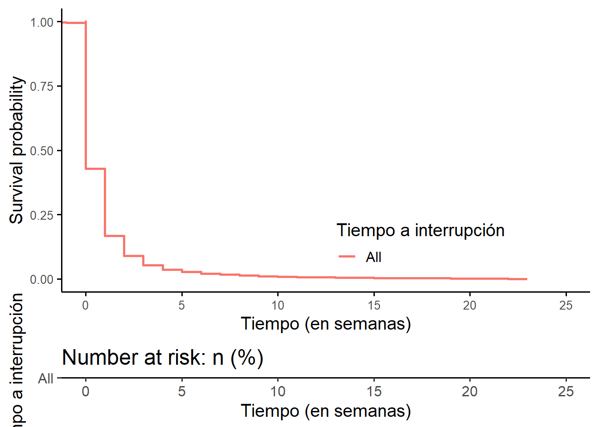
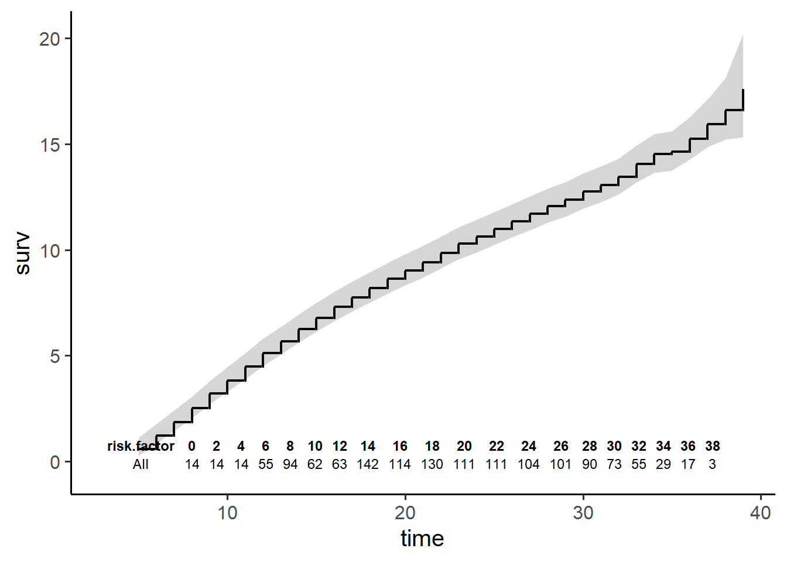
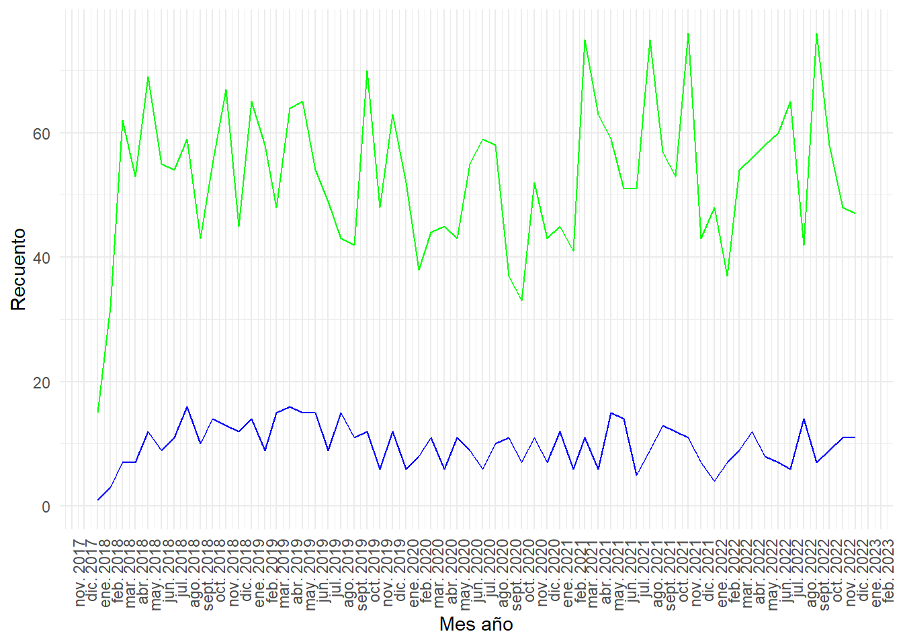

Paso 1
Explicación
Cargar paquetes
Cargar bases de datos
Ordenar ingresos por año y mes
Code
data$MES_NUM<-readr::parse_number(data$MES)Warning: 8 parsing failures.
row col expected actual
725 -- a number SIN INFORMACIÓN
726 -- a number SIN INFORMACIÓN
727 -- a number SIN INFORMACIÓN
728 -- a number SIN INFORMACIÓN
729 -- a number SIN INFORMACIÓN
... ... ........ ...............
See problems(...) for more details.Code
data2<- dplyr::arrange(data, `AÑO`, MES_NUM) %>%
#ordenar columna
dplyr::select(`AÑO`, MES_NUM, MES, CAUSAL, everything())
#DataExplorer::create_report(data2)Reemplazar “Sin información” por dato perdido (NA).
Code
#_#_#_#_#_#_#_#_#_#_#_#_#_#_#_#_#_#_#_#_#_#_#_#_#_#_#_#_#_#_#_#_#_#_#_#_#_#_#_#_
#_#_#_#_#_#_#_#_#_#_#_#_#_#_#_#_#_#_#_#_#_#_#_#_#_#_#_#_#_#_#_#_#_#_#_#_#_#_#_#_
#NACIONALIDAD
data2$PAIS_ORIGEN<-ifelse(data2$PAIS_ORIGEN=="SIN INFORMACIÓN",NA, data2$PAIS_ORIGEN)
data2$PAIS_ORIGEN<-ifelse(data2$PAIS_ORIGEN=="SIN INFORMACION",NA, data2$PAIS_ORIGEN)
#NACIONALIDAD REC
data2<- dplyr::mutate(data2, PAIS_ORIGEN_REC= dplyr::case_when(PAIS_ORIGEN=="CHILE"~0, PAIS_ORIGEN!= "CHILE"~1, T~NA_real_))
#_#_#_#_#_#_#_#_#_#_#_#_#_#_#_#_#_#_#_#_#_#_#_#_#_#_#_#_#_#_#_#_#_#_#_#_#_#_#_#_
#_#_#_#_#_#_#_#_#_#_#_#_#_#_#_#_#_#_#_#_#_#_#_#_#_#_#_#_#_#_#_#_#_#_#_#_#_#_#_#_
data2$REGION_RESIDENCIA<-ifelse(data2$REGION_RESIDENCIA=="SIN INFORMACION",NA, data2$REGION_RESIDENCIA)
#_#_#_#_#_#_#_#_#_#_#_#_#_#_#_#_#_#_#_#_#_#_#_#_#_#_#_#_#_#_#_#_#_#_#_#_#_#_#_#_
#_#_#_#_#_#_#_#_#_#_#_#_#_#_#_#_#_#_#_#_#_#_#_#_#_#_#_#_#_#_#_#_#_#_#_#_#_#_#_#_
data2$PREVISION_SALUD<-ifelse(data2$PREVISION_SALUD=="DESCONOCIDO",NA, data2$PREVISION_SALUD)
data2$PREVISION_SALUD<-ifelse(data2$PREVISION_SALUD=="SIN INFORMACIÓN",NA, data2$PREVISION_SALUD)
data2$PREVISION_SALUD<-ifelse(data2$PREVISION_SALUD=="SIN PREVISIÓN","NINGUNA", data2$PREVISION_SALUD)
data2$PREVISION_SALUD<-ifelse(data2$PREVISION_SALUD=="SISA", "NINGUNA", data2$PREVISION_SALUD)
data2$PREVISION_SALUD_REC<-ifelse(data2$PREVISION_SALUD=="SISTEMA PREVISIONAL DE LAS FFAA", "FFAA Y ORDEN", data2$PREVISION_SALUD)
data2$PREVISION_SALUD_REC<-ifelse(data2$PREVISION_SALUD_REC=="CAPREDENA", "FFAA Y ORDEN", data2$PREVISION_SALUD_REC)
data2$PREVISION_SALUD_REC<-ifelse(data2$PREVISION_SALUD_REC=="DIPRECA", "FFAA Y ORDEN", data2$PREVISION_SALUD_REC)
#_#_#_#_#_#_#_#_#_#_#_#_#_#_#_#_#_#_#_#_#_#_#_#_#_#_#_#_#_#_#_#_#_#_#_#_#_#_#_#_
#_#_#_#_#_#_#_#_#_#_#_#_#_#_#_#_#_#_#_#_#_#_#_#_#_#_#_#_#_#_#_#_#_#_#_#_#_#_#_#_
data2$TIPO_ESTABLECIMIENTO<-ifelse(data2$TIPO_ESTABLECIMIENTO=="SIN INFORMACIÓN",NA, data2$TIPO_ESTABLECIMIENTO)
#_#_#_#_#_#_#_#_#_#_#_#_#_#_#_#_#_#_#_#_#_#_#_#_#_#_#_#_#_#_#_#_#_#_#_#_#_#_#_#_
#_#_#_#_#_#_#_#_#_#_#_#_#_#_#_#_#_#_#_#_#_#_#_#_#_#_#_#_#_#_#_#_#_#_#_#_#_#_#_#_
data2$HITO3_PROCEDIMIENTO_INTERVENCION<- ifelse(data2$HITO3_PROCEDIMIENTO_INTERVENCION=="SIN INFORMACIÓN",NA, data2$HITO3_PROCEDIMIENTO_INTERVENCION)
#_#_#_#_#_#_#_#_#_#_#_#_#_#_#_#_#_#_#_#_#_#_#_#_#_#_#_#_#_#_#_#_#_#_#_#_#_#_#_#_
#_#_#_#_#_#_#_#_#_#_#_#_#_#_#_#_#_#_#_#_#_#_#_#_#_#_#_#_#_#_#_#_#_#_#_#_#_#_#_#_
data2$HITO4_MUJER_ACEPTA_ACOM<- ifelse(data2$HITO4_MUJER_ACEPTA_ACOM=="SIN INFORMACIÓN",NA, data2$HITO4_MUJER_ACEPTA_ACOM)
#_#_#_#_#_#_#_#_#_#_#_#_#_#_#_#_#_#_#_#_#_#_#_#_#_#_#_#_#_#_#_#_#_#_#_#_#_#_#_#_
#_#_#_#_#_#_#_#_#_#_#_#_#_#_#_#_#_#_#_#_#_#_#_#_#_#_#_#_#_#_#_#_#_#_#_#_#_#_#_#_
data2$EDAD_MUJER_REC<- cut(data2$EDAD_MUJER,5)
#_#_#_#_#_#_#_#_#_#_#_#_#_#_#_#_#_#_#_#_#_#_#_#_#_#_#_#_#_#_#_#_#_#_#_#_#_#_#_#_
#_#_#_#_#_#_#_#_#_#_#_#_#_#_#_#_#_#_#_#_#_#_#_#_#_#_#_#_#_#_#_#_#_#_#_#_#_#_#_#_
data2$HITO1_EDAD_GEST_SEM_REC<- cut(data2$HITO1_EDAD_GESTACIONAL_SEMANAS,5)
#_#_#_#_#_#_#_#_#_#_#_#_#_#_#_#_#_#_#_#_#_#_#_#_#_#_#_#_#_#_#_#_#_#_#_#_#_#_#_#_
#_#_#_#_#_#_#_#_#_#_#_#_#_#_#_#_#_#_#_#_#_#_#_#_#_#_#_#_#_#_#_#_#_#_#_#_#_#_#_#_
data2$PUEBLO_ORIGINARIO_REC<- dplyr::case_when(data2$PUEBLO_ORIGINARIO %in% c("NINGUNO")~ 0, data2$PUEBLO_ORIGINARIO %in% c("SIN INFORMACION")~ NA_real_, T~1)
#_#_#_#_#_#_#_#_#_#_#_#_#_#_#_#_#_#_#_#_#_#_#_#_#_#_#_#_#_#_#_#_#_#_#_#_#_#_#_#_
#_#_#_#_#_#_#_#_#_#_#_#_#_#_#_#_#_#_#_#_#_#_#_#_#_#_#_#_#_#_#_#_#_#_#_#_#_#_#_#_
#previsión y tramo
#table(data2$PREVISION_SALUD_REC, data2$TRAMO_REC, exclude=NULL)
data2$PREV_TRAMO<-ifelse(data2$PREVISION_SALUD_REC== "FONASA",
paste0("FONASA ",data2$TRAMO_FONASA),
data2$PREVISION_SALUD_REC)
#si no tiene tramo, el mas vulnerable
data2$PREV_TRAMO<-ifelse(data2$PREV_TRAMO=="FONASA NA",
"FONASA A",
data2$PREV_TRAMO)
#table(data2$PREV_TRAMO, exclude=NULL)
data2$PREV_TRAMO_REC<-
dplyr::case_when(data2$PREV_TRAMO %in% c("FONASA A", "FONASA B")~ "FONASA A/B", data2$PREV_TRAMO %in% c("FONASA C", "FONASA D")~ "FONASA C/D",data2$PREV_TRAMO %in% c("FFAA Y ORDEN", "ISAPRE")~ "ISAPRE o FFAA", T~data2$PREV_TRAMO)
# ISAPRE
# FFAA Y ORDEN
# FONASA A
# FONASA B
# FONASA C
# FONASA D
# NINGUNA
#table(data2$PREVISION_SALUD_REC, data2$tramo_rec, exclude=NULL)
data2$PREV_TRAMO= relevel(factor(data2$PREV_TRAMO), ref = "ISAPRE")
data2$PREV_TRAMO_REC= relevel(factor(data2$PREV_TRAMO_REC), ref = "ISAPRE o FFAA")
#_#_#_#_#_#_#_#_#_#_#_#_#_#_#_#_#_#_#_#_#_#_#_#_#_#_#_#_#_#_#_#_#_#_#_#_#_#_#_#_
#_#_#_#_#_#_#_#_#_#_#_#_#_#_#_#_#_#_#_#_#_#_#_#_#_#_#_#_#_#_#_#_#_#_#_#_#_#_#_#_
#macrozona
#Dirección Zonal Norte: Regiones de Arica y Parinacota, Tarapacá, Antofagasta y Atacama, Dirección Zonal Centro Norte: Regiones de Coquimbo y Valparaíso, Nivel Central: Regiones Metropolitana y de Bernardo O´Higgins, Dirección Zonal Centro Sur: Regiones del Maule, Ñuble y Biobío, Dirección Zonal Sur: Regiones de La Araucanía, Los Ríos, Los Lagos, Aysén y Magallanes
if(is.null(data2$MACROZONA)){
data2$MACROZONA <- factor(dplyr::case_when(data2$REGION_RESIDENCIA %in% c("REGION DE ARICA PARINACOTA", "REGION DE TARAPACA", "REGION DE ANTOFAGASTA", "REGION DE ATACAMA")~"NORTE", data2$REGION_RESIDENCIA %in% c("REGION DE COQUIMBO", "REGION DE VALPARAISO")~"CENTRO NORTE", data2$REGION_RESIDENCIA %in% c("REGION DEL LIBERTADOR GRAL. B. O'HIGGINS", "REGION DEL LIBERTADOR GRAL.B.OHIGGINS", "REGION METROPOLITANA DE SANTIAGO")~"CENTRO", data2$REGION_RESIDENCIA %in% c("REGION DE ÑUBLE", "REGION DEL BIOBIO", "REGION DEL MAULE")~"CENTRO SUR", data2$REGION_RESIDENCIA %in% c("REGION DE LA ARAUCANIA", "REGION DE LOS RIOS", "REGION DE LOS LAGOS", "REGION DE AYSEN DEL GENERAL CARLOS IBAÑEZ DEL CAMPO","REGION DE MAGALLANES Y DE LA ANTARTICA CHILENA")~"SUR",T~NA_character_))
}Qué es SISA en PREVISIÓN, y tener en cuenta la categoria en HITO2 DECISIÓN, “NO APLICA, INSCONSCIENTE”. LAS SISA podrían tener tramo igual ¿no?, a su vez, los Ninguna previsión pueden ir en tramo A. Analizar en el futuro.
Operacionalizar acompañamiento psicosocial (¿es
HITO4_MUJER_ACEPTA_ACOM?)Clasificar nivel de atención
Exploratorio
Code
#https://stackoverflow.com/questions/75364577/prevent-html-table-to-use-full-page-width-in-quarto
#| class-output: controlly
as.data.frame.TableOne <- function(x, ...) {capture.output(print(x,
showAllLevels = TRUE, ...) -> x)
y <- as.data.frame(x)
y$charactersitic <- dplyr::na_if(rownames(x), "")
y <- y %>%
fill(charactersitic, .direction = "down") %>%
select(charactersitic, everything())
rownames(y) <- NULL
y}
tab1<-
CreateTableOne(vars =c("AÑO", "MES_NUM", "CAUSAL", "EDAD_MUJER", "EDAD_MUJER_REC", "PUEBLO_ORIGINARIO_REC", "REGION_RESIDENCIA", "TIPO_ESTABLECIMIENTO", "SEREMIoSERVICIO", "HITO1_EDAD_GESTACIONAL_SEMANAS", "HITO1_EDAD_GEST_SEM_REC", "HITO2_DECISION_MUJER_IVE", "HITO3_PROCEDIMIENTO_INTERVENCION", "HITO3_SEMANAS_G_EVACUA", "HITO3_COMPLICACION_POST_IVE", "HITO3_CONDICION_MUJER_POST_IVE", "HITO3_TIPO_ATENCION", "HITO3_SERV_SALUD_ESTABLECIMIENTO", "HITO4_MUJER_ACEPTA_ACOM", "N_C_PSICOLOGO", "N_C_ASIST_SOCIAL", "N_C_DUPLA", "N_C_PSIQUIATRA", "N_VISITAS_DOM", "TOTAL_ATENCIONES_ACOMPAÑAMIENTO", "PAIS_ORIGEN_REC", "PREVISION_SALUD_REC", "PREV_TRAMO"),
#transforma la variable en numerico
data= data2,
factorVars=c("AÑO","MES_NUM", "CAUSAL", "EDAD_MUJER_REC", "PUEBLO_ORIGINARIO_REC","PAIS_ORIGEN_REC", "HITO1_EDAD_GEST_SEM_REC", "HITO3_COMPLICACION_POST_IVE", "HITO3_CONDICION_MUJER_POST_IVE", "HITO3_TIPO_ATENCION", "HITO3_SERV_SALUD_ESTABLECIMIENTO", "HITO4_MUJER_ACEPTA_ACOM"),
strata= "HITO2_DECISION_MUJER_IVE",addOverall = T, includeNA =T)
#_#_#_#_#_#_#_#_#_#_#_#_#_#_#_#_#_#_#_#_#_#_#_#_#_#_#_#_#_#_#_#_#_#_#_#_
#_#_#_#_#_#_#_#_#_#_#_#_#_#_#_#_#_#_#_#_#_#_#_#_#_#_#_#_#_#_#_#_#_#_#_#_
invisible("Para ver asociaciones sobre la variable binaria")
data2$HITO2_DECISION_MUJER_IVE_bin<- grepl('INTERRUMPIR', data2$HITO2_DECISION_MUJER_IVE)
tab1_num<-
CreateTableOne(vars =c("EDAD_MUJER","HITO1_EDAD_GESTACIONAL_SEMANAS"),
#transforma la variable en numerico
data= data2,
strata= "HITO2_DECISION_MUJER_IVE_bin",addOverall = T, includeNA =T)
#print(tab1_num, nonnormal= c("EDAD_MUJER", "HITO1_EDAD_GESTACIONAL_SEMANAS"))
paste0("Wlicoxon test, HITO2_DECISION_MUJER_IVE_bin-EDAD_MUJER ")[1] "Wlicoxon test, HITO2_DECISION_MUJER_IVE_bin-EDAD_MUJER "Code
paste0("W= ",round(broom::tidy(wilcox.test(EDAD_MUJER ~ HITO2_DECISION_MUJER_IVE_bin, data=data2))$statistic/sqrt(nrow(data2)),0),", p= ",round(broom::tidy(wilcox.test(EDAD_MUJER ~ HITO2_DECISION_MUJER_IVE_bin, data=data2))$p.value,3))[1] "W= 16199, p= 0.097"Code
paste0("Wlicoxon test, HITO2_DECISION_MUJER_IVE_bin-HITO1_EDAD_GESTACIONAL_SEMANAS ")[1] "Wlicoxon test, HITO2_DECISION_MUJER_IVE_bin-HITO1_EDAD_GESTACIONAL_SEMANAS "Code
paste0("W= ",round(broom::tidy(wilcox.test(HITO1_EDAD_GESTACIONAL_SEMANAS ~ HITO2_DECISION_MUJER_IVE_bin, data=data2))$statistic/sqrt(nrow(data2)),0),", p= ",round(broom::tidy(wilcox.test(HITO1_EDAD_GESTACIONAL_SEMANAS ~ HITO2_DECISION_MUJER_IVE_bin, data=data2))$p.value,3))[1] "W= 20075, p= 0"Code
#_#_#_#_#_#_#_#_#_#_#_#_#_#_#_#_#_#_#_#_#_#_#_#_#_#_#_#_#_#_
#_#_#_#_#_#_#_#_#_#_#_#_#_#_#_#_#_#_#_#_#_#_#_#_#_#_#_#_#_#_
as.data.frame.TableOne(tab1, nonnormal= c("EDAD_MUJER", "HITO1_EDAD_GESTACIONAL_SEMANAS"))%>%
knitr::kable("markdown", caption="Descriptivos") #%>% | charactersitic | level | Overall | CONTINUAR EL EMBARAZO | INTERRUMPIR EL EMBARAZO | NO APLICA, INSCONSCIENTE | p | test |
|---|---|---|---|---|---|---|---|
| n | 3789 | 593 | 3183 | 13 | |||
| AÑO (%) | 2018 | 732 (19.3) | 115 ( 19.4) | 617 ( 19.4) | 0 ( 0.0) | <0.001 | |
| AÑO (%) | 2019 | 818 (21.6) | 149 ( 25.1) | 669 ( 21.0) | 0 ( 0.0) | ||
| AÑO (%) | 2020 | 662 (17.5) | 103 ( 17.4) | 559 ( 17.6) | 0 ( 0.0) | ||
| AÑO (%) | 2021 | 820 (21.6) | 121 ( 20.4) | 689 ( 21.6) | 10 ( 76.9) | ||
| AÑO (%) | 2022 | 757 (20.0) | 105 ( 17.7) | 649 ( 20.4) | 3 ( 23.1) | ||
| MES_NUM (%) | 1 | 262 ( 6.9) | 37 ( 6.2) | 225 ( 7.1) | 0 ( 0.0) | <0.001 | |
| MES_NUM (%) | 2 | 239 ( 6.3) | 33 ( 5.6) | 206 ( 6.5) | 0 ( 0.0) | ||
| MES_NUM (%) | 3 | 337 ( 8.9) | 53 ( 8.9) | 283 ( 8.9) | 1 ( 7.7) | ||
| MES_NUM (%) | 4 | 329 ( 8.7) | 47 ( 7.9) | 281 ( 8.8) | 1 ( 7.7) | ||
| MES_NUM (%) | 5 | 363 ( 9.6) | 61 ( 10.3) | 294 ( 9.2) | 8 ( 61.5) | ||
| MES_NUM (%) | 6 | 331 ( 8.7) | 54 ( 9.1) | 275 ( 8.6) | 2 ( 15.4) | ||
| MES_NUM (%) | 7 | 315 ( 8.3) | 37 ( 6.2) | 278 ( 8.7) | 0 ( 0.0) | ||
| MES_NUM (%) | 8 | 341 ( 9.0) | 64 ( 10.8) | 277 ( 8.7) | 0 ( 0.0) | ||
| MES_NUM (%) | 9 | 308 ( 8.1) | 52 ( 8.8) | 255 ( 8.0) | 1 ( 7.7) | ||
| MES_NUM (%) | 10 | 323 ( 8.5) | 54 ( 9.1) | 269 ( 8.5) | 0 ( 0.0) | ||
| MES_NUM (%) | 11 | 343 ( 9.1) | 52 ( 8.8) | 291 ( 9.1) | 0 ( 0.0) | ||
| MES_NUM (%) | 12 | 290 ( 7.7) | 49 ( 8.3) | 241 ( 7.6) | 0 ( 0.0) | ||
| MES_NUM (%) | NA | 8 ( 0.2) | 0 ( 0.0) | 8 ( 0.3) | 0 ( 0.0) | ||
| CAUSAL (%) | Causal 1 | 1171 (30.9) | 190 ( 32.0) | 968 ( 30.4) | 13 (100.0) | <0.001 | |
| CAUSAL (%) | Causal 2 | 1887 (49.8) | 346 ( 58.3) | 1541 ( 48.4) | 0 ( 0.0) | ||
| CAUSAL (%) | Causal 3 | 731 (19.3) | 57 ( 9.6) | 674 ( 21.2) | 0 ( 0.0) | ||
| EDAD_MUJER (median [IQR]) | 30.00 [24.00, 36.00] | 31.00 [24.00, 37.00] | 30.00 [24.00, 36.00] | 31.00 [29.00, 35.00] | 0.251 | nonnorm | |
| EDAD_MUJER_REC (%) | (11,18.6] | 318 ( 8.4) | 61 ( 10.3) | 257 ( 8.1) | 0 ( 0.0) | 0.033 | |
| EDAD_MUJER_REC (%) | (18.6,26.2] | 979 (25.8) | 135 ( 22.8) | 842 ( 26.5) | 2 ( 15.4) | ||
| EDAD_MUJER_REC (%) | (26.2,33.8] | 1199 (31.6) | 170 ( 28.7) | 1022 ( 32.1) | 7 ( 53.8) | ||
| EDAD_MUJER_REC (%) | (33.8,41.4] | 1082 (28.6) | 182 ( 30.7) | 896 ( 28.1) | 4 ( 30.8) | ||
| EDAD_MUJER_REC (%) | (41.4,49] | 193 ( 5.1) | 43 ( 7.3) | 150 ( 4.7) | 0 ( 0.0) | ||
| EDAD_MUJER_REC (%) | NA | 18 ( 0.5) | 2 ( 0.3) | 16 ( 0.5) | 0 ( 0.0) | ||
| PUEBLO_ORIGINARIO_REC (%) | 0 | 3000 (79.2) | 460 ( 77.6) | 2527 ( 79.4) | 13 (100.0) | 0.061 | |
| PUEBLO_ORIGINARIO_REC (%) | 1 | 156 ( 4.1) | 35 ( 5.9) | 121 ( 3.8) | 0 ( 0.0) | ||
| PUEBLO_ORIGINARIO_REC (%) | NA | 633 (16.7) | 98 ( 16.5) | 535 ( 16.8) | 0 ( 0.0) | ||
| REGION_RESIDENCIA (%) | REGION DE ANTOFAGASTA | 178 ( 4.7) | 28 ( 4.7) | 149 ( 4.7) | 1 ( 7.7) | <0.001 | |
| REGION_RESIDENCIA (%) | REGION DE ARICA PARINACOTA | 66 ( 1.7) | 6 ( 1.0) | 60 ( 1.9) | 0 ( 0.0) | ||
| REGION_RESIDENCIA (%) | REGION DE ATACAMA | 104 ( 2.7) | 18 ( 3.0) | 86 ( 2.7) | 0 ( 0.0) | ||
| REGION_RESIDENCIA (%) | REGION DE AYSEN DEL GENERAL CARLOS IBAÑEZ DEL CAMPO | 30 ( 0.8) | 10 ( 1.7) | 20 ( 0.6) | 0 ( 0.0) | ||
| REGION_RESIDENCIA (%) | REGION DE COQUIMBO | 161 ( 4.2) | 27 ( 4.6) | 134 ( 4.2) | 0 ( 0.0) | ||
| REGION_RESIDENCIA (%) | REGION DE LA ARAUCANIA | 200 ( 5.3) | 42 ( 7.1) | 158 ( 5.0) | 0 ( 0.0) | ||
| REGION_RESIDENCIA (%) | REGION DE LOS LAGOS | 169 ( 4.5) | 31 ( 5.2) | 138 ( 4.3) | 0 ( 0.0) | ||
| REGION_RESIDENCIA (%) | REGION DE LOS RIOS | 125 ( 3.3) | 22 ( 3.7) | 103 ( 3.2) | 0 ( 0.0) | ||
| REGION_RESIDENCIA (%) | REGION DE MAGALLANES Y DE LA ANTARTICA CHILENA | 50 ( 1.3) | 2 ( 0.3) | 48 ( 1.5) | 0 ( 0.0) | ||
| REGION_RESIDENCIA (%) | REGION DE ÑUBLE | 69 ( 1.8) | 17 ( 2.9) | 51 ( 1.6) | 1 ( 7.7) | ||
| REGION_RESIDENCIA (%) | REGION DE TARAPACA | 83 ( 2.2) | 17 ( 2.9) | 66 ( 2.1) | 0 ( 0.0) | ||
| REGION_RESIDENCIA (%) | REGION DE VALPARAISO | 449 (11.9) | 39 ( 6.6) | 402 ( 12.6) | 8 ( 61.5) | ||
| REGION_RESIDENCIA (%) | REGION DEL BIOBIO | 299 ( 7.9) | 75 ( 12.6) | 224 ( 7.0) | 0 ( 0.0) | ||
| REGION_RESIDENCIA (%) | REGION DEL LIBERTADOR GRAL. B. O’HIGGINS | 67 ( 1.8) | 6 ( 1.0) | 61 ( 1.9) | 0 ( 0.0) | ||
| REGION_RESIDENCIA (%) | REGION DEL LIBERTADOR GRAL.B.OHIGGINS | 102 ( 2.7) | 8 ( 1.3) | 94 ( 3.0) | 0 ( 0.0) | ||
| REGION_RESIDENCIA (%) | REGION DEL MAULE | 187 ( 4.9) | 61 ( 10.3) | 126 ( 4.0) | 0 ( 0.0) | ||
| REGION_RESIDENCIA (%) | REGION METROPOLITANA DE SANTIAGO | 1439 (38.0) | 181 ( 30.5) | 1255 ( 39.4) | 3 ( 23.1) | ||
| REGION_RESIDENCIA (%) | NA | 11 ( 0.3) | 3 ( 0.5) | 8 ( 0.3) | 0 ( 0.0) | ||
| TIPO_ESTABLECIMIENTO (%) | PRIVADO | 484 (12.8) | 31 ( 5.2) | 453 ( 14.2) | 0 ( 0.0) | <0.001 | |
| TIPO_ESTABLECIMIENTO (%) | PÚBLICO | 3301 (87.1) | 561 ( 94.6) | 2727 ( 85.7) | 13 (100.0) | ||
| TIPO_ESTABLECIMIENTO (%) | NA | 4 ( 0.1) | 1 ( 0.2) | 3 ( 0.1) | 0 ( 0.0) | ||
| SEREMIoSERVICIO (%) | SEREMI De Antofagasta | 17 ( 0.4) | 0 ( 0.0) | 17 ( 0.5) | 0 ( 0.0) | <0.001 | |
| SEREMIoSERVICIO (%) | SEREMI De Coquimbo | 1 ( 0.0) | 0 ( 0.0) | 1 ( 0.0) | 0 ( 0.0) | ||
| SEREMIoSERVICIO (%) | SEREMI De La Araucanía | 8 ( 0.2) | 0 ( 0.0) | 8 ( 0.3) | 0 ( 0.0) | ||
| SEREMIoSERVICIO (%) | SEREMI De Los Lagos | 4 ( 0.1) | 0 ( 0.0) | 4 ( 0.1) | 0 ( 0.0) | ||
| SEREMIoSERVICIO (%) | SEREMI De Los Ríos | 11 ( 0.3) | 0 ( 0.0) | 11 ( 0.3) | 0 ( 0.0) | ||
| SEREMIoSERVICIO (%) | SEREMI De Magallanes y la Antártica Chilena | 2 ( 0.1) | 0 ( 0.0) | 2 ( 0.1) | 0 ( 0.0) | ||
| SEREMIoSERVICIO (%) | SEREMI De Valparaíso | 20 ( 0.5) | 1 ( 0.2) | 19 ( 0.6) | 0 ( 0.0) | ||
| SEREMIoSERVICIO (%) | SEREMI Del Biobío | 27 ( 0.7) | 1 ( 0.2) | 26 ( 0.8) | 0 ( 0.0) | ||
| SEREMIoSERVICIO (%) | SEREMI Del Libertador Gral. B. OHiggins | 16 ( 0.4) | 1 ( 0.2) | 15 ( 0.5) | 0 ( 0.0) | ||
| SEREMIoSERVICIO (%) | SEREMI Metropolitana de Santiago | 382 (10.1) | 29 ( 4.9) | 353 ( 11.1) | 0 ( 0.0) | ||
| SEREMIoSERVICIO (%) | Servicio de Salud Aconcagua | 59 ( 1.6) | 6 ( 1.0) | 53 ( 1.7) | 0 ( 0.0) | ||
| SEREMIoSERVICIO (%) | Servicio de Salud Aisén | 27 ( 0.7) | 9 ( 1.5) | 18 ( 0.6) | 0 ( 0.0) | ||
| SEREMIoSERVICIO (%) | Servicio de Salud Antofagasta | 157 ( 4.1) | 26 ( 4.4) | 130 ( 4.1) | 1 ( 7.7) | ||
| SEREMIoSERVICIO (%) | Servicio de Salud Araucanía Norte | 45 ( 1.2) | 15 ( 2.5) | 30 ( 0.9) | 0 ( 0.0) | ||
| SEREMIoSERVICIO (%) | Servicio de Salud Araucanía Sur | 138 ( 3.6) | 26 ( 4.4) | 112 ( 3.5) | 0 ( 0.0) | ||
| SEREMIoSERVICIO (%) | Servicio de Salud Arauco | 20 ( 0.5) | 4 ( 0.7) | 16 ( 0.5) | 0 ( 0.0) | ||
| SEREMIoSERVICIO (%) | Servicio de Salud Arica | 68 ( 1.8) | 6 ( 1.0) | 62 ( 1.9) | 0 ( 0.0) | ||
| SEREMIoSERVICIO (%) | Servicio de Salud Atacama | 102 ( 2.7) | 20 ( 3.4) | 82 ( 2.6) | 0 ( 0.0) | ||
| SEREMIoSERVICIO (%) | Servicio de Salud Biobío | 59 ( 1.6) | 14 ( 2.4) | 45 ( 1.4) | 0 ( 0.0) | ||
| SEREMIoSERVICIO (%) | Servicio de Salud Chiloé | 32 ( 0.8) | 5 ( 0.8) | 27 ( 0.8) | 0 ( 0.0) | ||
| SEREMIoSERVICIO (%) | Servicio de Salud Concepción | 112 ( 3.0) | 40 ( 6.7) | 72 ( 2.3) | 0 ( 0.0) | ||
| SEREMIoSERVICIO (%) | Servicio de Salud Coquimbo | 155 ( 4.1) | 28 ( 4.7) | 127 ( 4.0) | 0 ( 0.0) | ||
| SEREMIoSERVICIO (%) | Servicio de Salud Del Libertador B.OHiggins | 148 ( 3.9) | 13 ( 2.2) | 135 ( 4.2) | 0 ( 0.0) | ||
| SEREMIoSERVICIO (%) | Servicio de Salud Del Maule | 176 ( 4.6) | 60 ( 10.1) | 116 ( 3.6) | 0 ( 0.0) | ||
| SEREMIoSERVICIO (%) | Servicio de Salud Del Reloncaví | 82 ( 2.2) | 18 ( 3.0) | 64 ( 2.0) | 0 ( 0.0) | ||
| SEREMIoSERVICIO (%) | Servicio de Salud Iquique | 80 ( 2.1) | 17 ( 2.9) | 63 ( 2.0) | 0 ( 0.0) | ||
| SEREMIoSERVICIO (%) | Servicio de Salud Magallanes | 46 ( 1.2) | 2 ( 0.3) | 44 ( 1.4) | 0 ( 0.0) | ||
| SEREMIoSERVICIO (%) | Servicio de Salud Metropolitano Central | 214 ( 5.6) | 26 ( 4.4) | 188 ( 5.9) | 0 ( 0.0) | ||
| SEREMIoSERVICIO (%) | Servicio de Salud Metropolitano Norte | 238 ( 6.3) | 8 ( 1.3) | 228 ( 7.2) | 2 ( 15.4) | ||
| SEREMIoSERVICIO (%) | Servicio de Salud Metropolitano Occidente | 142 ( 3.7) | 27 ( 4.6) | 115 ( 3.6) | 0 ( 0.0) | ||
| SEREMIoSERVICIO (%) | Servicio de Salud Metropolitano Oriente | 181 ( 4.8) | 33 ( 5.6) | 147 ( 4.6) | 1 ( 7.7) | ||
| SEREMIoSERVICIO (%) | Servicio de Salud Metropolitano Sur | 151 ( 4.0) | 19 ( 3.2) | 132 ( 4.1) | 0 ( 0.0) | ||
| SEREMIoSERVICIO (%) | Servicio de Salud Metropolitano Sur Oriente | 178 ( 4.7) | 44 ( 7.4) | 134 ( 4.2) | 0 ( 0.0) | ||
| SEREMIoSERVICIO (%) | Servicio de Salud Ñuble | 85 ( 2.2) | 19 ( 3.2) | 65 ( 2.0) | 1 ( 7.7) | ||
| SEREMIoSERVICIO (%) | Servicio de Salud Osorno | 45 ( 1.2) | 7 ( 1.2) | 38 ( 1.2) | 0 ( 0.0) | ||
| SEREMIoSERVICIO (%) | Servicio de Salud Talcahuano | 67 ( 1.8) | 13 ( 2.2) | 54 ( 1.7) | 0 ( 0.0) | ||
| SEREMIoSERVICIO (%) | Servicio de Salud Valdivia | 126 ( 3.3) | 23 ( 3.9) | 103 ( 3.2) | 0 ( 0.0) | ||
| SEREMIoSERVICIO (%) | Servicio de Salud Valparaíso San Antonio | 169 ( 4.5) | 24 ( 4.0) | 137 ( 4.3) | 8 ( 61.5) | ||
| SEREMIoSERVICIO (%) | Servicio de Salud Viña del Mar Quillota | 199 ( 5.3) | 9 ( 1.5) | 190 ( 6.0) | 0 ( 0.0) | ||
| HITO1_EDAD_GESTACIONAL_SEMANAS (median [IQR]) | 16.00 [11.00, 22.00] | 21.00 [15.00, 26.00] | 16.00 [11.00, 21.00] | 27.50 [25.75, 31.75] | <0.001 | nonnorm | |
| HITO1_EDAD_GEST_SEM_REC (%) | (1.96,9.2] | 734 (19.4) | 57 ( 9.6) | 676 ( 21.2) | 1 ( 7.7) | <0.001 | |
| HITO1_EDAD_GEST_SEM_REC (%) | (9.2,16.4] | 1163 (30.7) | 120 ( 20.2) | 1043 ( 32.8) | 0 ( 0.0) | ||
| HITO1_EDAD_GEST_SEM_REC (%) | (16.4,23.6] | 1124 (29.7) | 202 ( 34.1) | 920 ( 28.9) | 2 ( 15.4) | ||
| HITO1_EDAD_GEST_SEM_REC (%) | (23.6,30.8] | 478 (12.6) | 138 ( 23.3) | 336 ( 10.6) | 4 ( 30.8) | ||
| HITO1_EDAD_GEST_SEM_REC (%) | (30.8,38] | 203 ( 5.4) | 65 ( 11.0) | 133 ( 4.2) | 5 ( 38.5) | ||
| HITO1_EDAD_GEST_SEM_REC (%) | NA | 87 ( 2.3) | 11 ( 1.9) | 75 ( 2.4) | 1 ( 7.7) | ||
| HITO2_DECISION_MUJER_IVE (%) | CONTINUAR EL EMBARAZO | 593 (15.7) | 593 (100.0) | 0 ( 0.0) | 0 ( 0.0) | <0.001 | |
| HITO2_DECISION_MUJER_IVE (%) | INTERRUMPIR EL EMBARAZO | 3183 (84.0) | 0 ( 0.0) | 3183 (100.0) | 0 ( 0.0) | ||
| HITO2_DECISION_MUJER_IVE (%) | NO APLICA, INSCONSCIENTE | 13 ( 0.3) | 0 ( 0.0) | 0 ( 0.0) | 13 (100.0) | ||
| HITO3_PROCEDIMIENTO_INTERVENCION (%) | ABORTO INDUCIDO | 5 ( 0.1) | 0 ( 0.0) | 5 ( 0.2) | 0 ( 0.0) | <0.001 | |
| HITO3_PROCEDIMIENTO_INTERVENCION (%) | ABORTO INDUCIDO , OTRO. ESPECIFICAR histerectomia abdominal | 1 ( 0.0) | 0 ( 0.0) | 1 ( 0.0) | 0 ( 0.0) | ||
| HITO3_PROCEDIMIENTO_INTERVENCION (%) | ASPIRACIÓN ENDOUTERINA ELÉCTRICA | 2 ( 0.1) | 0 ( 0.0) | 2 ( 0.1) | 0 ( 0.0) | ||
| HITO3_PROCEDIMIENTO_INTERVENCION (%) | ASPIRACIÓN ENDOUTERINA ELÉCTRICA , LEGRADO | 2 ( 0.1) | 0 ( 0.0) | 2 ( 0.1) | 0 ( 0.0) | ||
| HITO3_PROCEDIMIENTO_INTERVENCION (%) | ASPIRACIÓN MANUAL ENDOUTERINA | 121 ( 3.2) | 0 ( 0.0) | 120 ( 3.8) | 1 ( 7.7) | ||
| HITO3_PROCEDIMIENTO_INTERVENCION (%) | ASPIRACIÓN MANUAL ENDOUTERINA (AMEU) | 23 ( 0.6) | 0 ( 0.0) | 23 ( 0.7) | 0 ( 0.0) | ||
| HITO3_PROCEDIMIENTO_INTERVENCION (%) | ASPIRACIÓN MANUAL ENDOUTERINA , LAPAROTOMÍA | 1 ( 0.0) | 0 ( 0.0) | 1 ( 0.0) | 0 ( 0.0) | ||
| HITO3_PROCEDIMIENTO_INTERVENCION (%) | ASPIRACIÓN MANUAL ENDOUTERINA , LEGRADO | 1 ( 0.0) | 0 ( 0.0) | 1 ( 0.0) | 0 ( 0.0) | ||
| HITO3_PROCEDIMIENTO_INTERVENCION (%) | ASPIRACIÓN MANUAL ENDOUTERINA , OTRO. ESPECIFICAR HISTEROSCOPIA | 1 ( 0.0) | 0 ( 0.0) | 1 ( 0.0) | 0 ( 0.0) | ||
| HITO3_PROCEDIMIENTO_INTERVENCION (%) | CESÁREA DE URGENCIA | 169 ( 4.5) | 3 ( 0.5) | 155 ( 4.9) | 11 ( 84.6) | ||
| HITO3_PROCEDIMIENTO_INTERVENCION (%) | CESÁREA DE URGENCIA , SALPINGECTOMÍA , LAPAROTOMÍA , LAPAROSCOPÍA | 1 ( 0.0) | 0 ( 0.0) | 1 ( 0.0) | 0 ( 0.0) | ||
| HITO3_PROCEDIMIENTO_INTERVENCION (%) | CESÁREA PROGRAMADA | 173 ( 4.6) | 1 ( 0.2) | 172 ( 5.4) | 0 ( 0.0) | ||
| HITO3_PROCEDIMIENTO_INTERVENCION (%) | CESÁREA PROGRAMADA , OTRO. ESPECIFICAR histerectomia | 1 ( 0.0) | 0 ( 0.0) | 1 ( 0.0) | 0 ( 0.0) | ||
| HITO3_PROCEDIMIENTO_INTERVENCION (%) | DILATACIÓN Y EVACUACIÓN | 7 ( 0.2) | 0 ( 0.0) | 7 ( 0.2) | 0 ( 0.0) | ||
| HITO3_PROCEDIMIENTO_INTERVENCION (%) | DILATACIÓN Y EVACUACIÓN , ABORTO INDUCIDO | 1 ( 0.0) | 0 ( 0.0) | 1 ( 0.0) | 0 ( 0.0) | ||
| HITO3_PROCEDIMIENTO_INTERVENCION (%) | DILATACIÓN Y EVACUACIÓN , LEGRADO | 11 ( 0.3) | 0 ( 0.0) | 11 ( 0.3) | 0 ( 0.0) | ||
| HITO3_PROCEDIMIENTO_INTERVENCION (%) | DILATACIÓN Y EVACUACIÓN , LEGRADO , ABORTO INDUCIDO | 2 ( 0.1) | 0 ( 0.0) | 2 ( 0.1) | 0 ( 0.0) | ||
| HITO3_PROCEDIMIENTO_INTERVENCION (%) | LAPAROSCOPÍA | 2 ( 0.1) | 0 ( 0.0) | 2 ( 0.1) | 0 ( 0.0) | ||
| HITO3_PROCEDIMIENTO_INTERVENCION (%) | LAPAROTOMÍA | 7 ( 0.2) | 0 ( 0.0) | 7 ( 0.2) | 0 ( 0.0) | ||
| HITO3_PROCEDIMIENTO_INTERVENCION (%) | LAPAROTOMÍA , OTRO. ESPECIFICAR histerectomia parcial, ( cuña en segmento ) | 1 ( 0.0) | 0 ( 0.0) | 1 ( 0.0) | 0 ( 0.0) | ||
| HITO3_PROCEDIMIENTO_INTERVENCION (%) | LAPAROTOMÍA , OTRO. ESPECIFICAR HISTERECTOMIA TOTAL + NEOIMPLANTE URETERAL | 1 ( 0.0) | 0 ( 0.0) | 1 ( 0.0) | 0 ( 0.0) | ||
| HITO3_PROCEDIMIENTO_INTERVENCION (%) | LEGRADO | 40 ( 1.1) | 0 ( 0.0) | 40 ( 1.3) | 0 ( 0.0) | ||
| HITO3_PROCEDIMIENTO_INTERVENCION (%) | LEGRADO , ABORTO INDUCIDO | 3 ( 0.1) | 0 ( 0.0) | 3 ( 0.1) | 0 ( 0.0) | ||
| HITO3_PROCEDIMIENTO_INTERVENCION (%) | LEGRADO , LAPAROTOMÍA | 1 ( 0.0) | 0 ( 0.0) | 1 ( 0.0) | 0 ( 0.0) | ||
| HITO3_PROCEDIMIENTO_INTERVENCION (%) | LEGRADO , PARTO VAGINAL INDUCIDO | 2 ( 0.1) | 0 ( 0.0) | 2 ( 0.1) | 0 ( 0.0) | ||
| HITO3_PROCEDIMIENTO_INTERVENCION (%) | METATREXATO (SÓLO ECTÓPICOS) | 4 ( 0.1) | 0 ( 0.0) | 4 ( 0.1) | 0 ( 0.0) | ||
| HITO3_PROCEDIMIENTO_INTERVENCION (%) | METATREXATO (SÓLO ECTÓPICOS) , ASPIRACIÓN MANUAL ENDOUTERINA | 2 ( 0.1) | 0 ( 0.0) | 2 ( 0.1) | 0 ( 0.0) | ||
| HITO3_PROCEDIMIENTO_INTERVENCION (%) | METATREXATO (SÓLO ECTÓPICOS) , LAPAROTOMÍA , OTRO. ESPECIFICAR RESECCION EN CUÑA | 1 ( 0.0) | 0 ( 0.0) | 1 ( 0.0) | 0 ( 0.0) | ||
| HITO3_PROCEDIMIENTO_INTERVENCION (%) | METATREXATO (SÓLO ECTÓPICOS) , SALPINGECTOMÍA , LAPAROTOMÍA | 1 ( 0.0) | 0 ( 0.0) | 1 ( 0.0) | 0 ( 0.0) | ||
| HITO3_PROCEDIMIENTO_INTERVENCION (%) | MIFEPRISTONA | 15 ( 0.4) | 0 ( 0.0) | 15 ( 0.5) | 0 ( 0.0) | ||
| HITO3_PROCEDIMIENTO_INTERVENCION (%) | MIFEPRISTONA , ASPIRACIÓN MANUAL ENDOUTERINA | 8 ( 0.2) | 0 ( 0.0) | 8 ( 0.3) | 0 ( 0.0) | ||
| HITO3_PROCEDIMIENTO_INTERVENCION (%) | MIFEPRISTONA , CESÁREA PROGRAMADA | 1 ( 0.0) | 0 ( 0.0) | 1 ( 0.0) | 0 ( 0.0) | ||
| HITO3_PROCEDIMIENTO_INTERVENCION (%) | MIFEPRISTONA , LEGRADO | 10 ( 0.3) | 0 ( 0.0) | 10 ( 0.3) | 0 ( 0.0) | ||
| HITO3_PROCEDIMIENTO_INTERVENCION (%) | MIFEPRISTONA , METATREXATO (SÓLO ECTÓPICOS) , LAPAROSCOPÍA | 1 ( 0.0) | 0 ( 0.0) | 1 ( 0.0) | 0 ( 0.0) | ||
| HITO3_PROCEDIMIENTO_INTERVENCION (%) | MIFEPRISTONA , METATREXATO (SÓLO ECTÓPICOS) , OTRO. ESPECIFICAR INYECCIÓN INTRASACULAR KCL | 1 ( 0.0) | 0 ( 0.0) | 1 ( 0.0) | 0 ( 0.0) | ||
| HITO3_PROCEDIMIENTO_INTERVENCION (%) | MIFEPRISTONA , OTRO. ESPECIFICAR BALON DE COOK | 1 ( 0.0) | 0 ( 0.0) | 1 ( 0.0) | 0 ( 0.0) | ||
| HITO3_PROCEDIMIENTO_INTERVENCION (%) | MIFEPRISTONA , OXITOCINA | 1 ( 0.0) | 0 ( 0.0) | 1 ( 0.0) | 0 ( 0.0) | ||
| HITO3_PROCEDIMIENTO_INTERVENCION (%) | MIFEPRISTONA , OXITOCINA , DILATACIÓN Y EVACUACIÓN | 1 ( 0.0) | 0 ( 0.0) | 1 ( 0.0) | 0 ( 0.0) | ||
| HITO3_PROCEDIMIENTO_INTERVENCION (%) | MIFEPRISTONA , OXITOCINA , PARTO VAGINAL INDUCIDO , OTRO. ESPECIFICAR Balon de cook | 1 ( 0.0) | 0 ( 0.0) | 1 ( 0.0) | 0 ( 0.0) | ||
| HITO3_PROCEDIMIENTO_INTERVENCION (%) | MISOPROSTOL | 448 (11.8) | 1 ( 0.2) | 447 ( 14.0) | 0 ( 0.0) | ||
| HITO3_PROCEDIMIENTO_INTERVENCION (%) | MISOPROSTOL Y LEGRADO | 18 ( 0.5) | 0 ( 0.0) | 18 ( 0.6) | 0 ( 0.0) | ||
| HITO3_PROCEDIMIENTO_INTERVENCION (%) | MISOPROSTOL , ABORTO INDUCIDO | 11 ( 0.3) | 0 ( 0.0) | 11 ( 0.3) | 0 ( 0.0) | ||
| HITO3_PROCEDIMIENTO_INTERVENCION (%) | MISOPROSTOL , ABORTO INDUCIDO , OTRO. ESPECIFICAR REVISION INSTRUMENTAL | 2 ( 0.1) | 0 ( 0.0) | 2 ( 0.1) | 0 ( 0.0) | ||
| HITO3_PROCEDIMIENTO_INTERVENCION (%) | MISOPROSTOL , ABORTO INDUCIDO , OTRO. ESPECIFICAR REVISIÓN INSTRUMENTAL | 1 ( 0.0) | 0 ( 0.0) | 1 ( 0.0) | 0 ( 0.0) | ||
| HITO3_PROCEDIMIENTO_INTERVENCION (%) | MISOPROSTOL , ASPIRACIÓN ENDOUTERINA ELÉCTRICA | 5 ( 0.1) | 0 ( 0.0) | 5 ( 0.2) | 0 ( 0.0) | ||
| HITO3_PROCEDIMIENTO_INTERVENCION (%) | MISOPROSTOL , ASPIRACIÓN MANUAL ENDOUTERINA | 124 ( 3.3) | 0 ( 0.0) | 124 ( 3.9) | 0 ( 0.0) | ||
| HITO3_PROCEDIMIENTO_INTERVENCION (%) | MISOPROSTOL , ASPIRACIÓN MANUAL ENDOUTERINA , LEGRADO | 10 ( 0.3) | 0 ( 0.0) | 10 ( 0.3) | 0 ( 0.0) | ||
| HITO3_PROCEDIMIENTO_INTERVENCION (%) | MISOPROSTOL , CESÁREA DE URGENCIA | 5 ( 0.1) | 0 ( 0.0) | 5 ( 0.2) | 0 ( 0.0) | ||
| HITO3_PROCEDIMIENTO_INTERVENCION (%) | MISOPROSTOL , CESÁREA PROGRAMADA | 2 ( 0.1) | 0 ( 0.0) | 2 ( 0.1) | 0 ( 0.0) | ||
| HITO3_PROCEDIMIENTO_INTERVENCION (%) | MISOPROSTOL , DILATACIÓN Y EVACUACIÓN | 41 ( 1.1) | 0 ( 0.0) | 41 ( 1.3) | 0 ( 0.0) | ||
| HITO3_PROCEDIMIENTO_INTERVENCION (%) | MISOPROSTOL , DILATACIÓN Y EVACUACIÓN , CESÁREA PROGRAMADA | 1 ( 0.0) | 0 ( 0.0) | 1 ( 0.0) | 0 ( 0.0) | ||
| HITO3_PROCEDIMIENTO_INTERVENCION (%) | MISOPROSTOL , DILATACIÓN Y EVACUACIÓN , LEGRADO | 18 ( 0.5) | 0 ( 0.0) | 18 ( 0.6) | 0 ( 0.0) | ||
| HITO3_PROCEDIMIENTO_INTERVENCION (%) | MISOPROSTOL , DILATACIÓN Y EVACUACIÓN , LEGRADO , PARTO VAGINAL INDUCIDO | 1 ( 0.0) | 0 ( 0.0) | 1 ( 0.0) | 0 ( 0.0) | ||
| HITO3_PROCEDIMIENTO_INTERVENCION (%) | MISOPROSTOL , LAPAROTOMÍA | 1 ( 0.0) | 0 ( 0.0) | 1 ( 0.0) | 0 ( 0.0) | ||
| HITO3_PROCEDIMIENTO_INTERVENCION (%) | MISOPROSTOL , LEGRADO | 358 ( 9.4) | 1 ( 0.2) | 357 ( 11.2) | 0 ( 0.0) | ||
| HITO3_PROCEDIMIENTO_INTERVENCION (%) | MISOPROSTOL , LEGRADO , ABORTO INDUCIDO | 14 ( 0.4) | 0 ( 0.0) | 14 ( 0.4) | 0 ( 0.0) | ||
| HITO3_PROCEDIMIENTO_INTERVENCION (%) | MISOPROSTOL , LEGRADO , OTRO. ESPECIFICAR KRAUSSE | 1 ( 0.0) | 0 ( 0.0) | 1 ( 0.0) | 0 ( 0.0) | ||
| HITO3_PROCEDIMIENTO_INTERVENCION (%) | MISOPROSTOL , LEGRADO , PARTO VAGINAL INDUCIDO | 6 ( 0.2) | 0 ( 0.0) | 6 ( 0.2) | 0 ( 0.0) | ||
| HITO3_PROCEDIMIENTO_INTERVENCION (%) | MISOPROSTOL , LEGRADO , SALPINGECTOMÍA | 1 ( 0.0) | 0 ( 0.0) | 1 ( 0.0) | 0 ( 0.0) | ||
| HITO3_PROCEDIMIENTO_INTERVENCION (%) | MISOPROSTOL , METATREXATO (SÓLO ECTÓPICOS) | 1 ( 0.0) | 0 ( 0.0) | 1 ( 0.0) | 0 ( 0.0) | ||
| HITO3_PROCEDIMIENTO_INTERVENCION (%) | MISOPROSTOL , MIFEPRISTONA | 330 ( 8.7) | 0 ( 0.0) | 330 ( 10.4) | 0 ( 0.0) | ||
| HITO3_PROCEDIMIENTO_INTERVENCION (%) | MISOPROSTOL , MIFEPRISTONA , ABORTO INDUCIDO | 5 ( 0.1) | 0 ( 0.0) | 5 ( 0.2) | 0 ( 0.0) | ||
| HITO3_PROCEDIMIENTO_INTERVENCION (%) | MISOPROSTOL , MIFEPRISTONA , ASPIRACIÓN ENDOUTERINA ELÉCTRICA | 4 ( 0.1) | 0 ( 0.0) | 4 ( 0.1) | 0 ( 0.0) | ||
| HITO3_PROCEDIMIENTO_INTERVENCION (%) | MISOPROSTOL , MIFEPRISTONA , ASPIRACIÓN MANUAL ENDOUTERINA | 99 ( 2.6) | 0 ( 0.0) | 99 ( 3.1) | 0 ( 0.0) | ||
| HITO3_PROCEDIMIENTO_INTERVENCION (%) | MISOPROSTOL , MIFEPRISTONA , ASPIRACIÓN MANUAL ENDOUTERINA , ABORTO INDUCIDO | 1 ( 0.0) | 0 ( 0.0) | 1 ( 0.0) | 0 ( 0.0) | ||
| HITO3_PROCEDIMIENTO_INTERVENCION (%) | MISOPROSTOL , MIFEPRISTONA , ASPIRACIÓN MANUAL ENDOUTERINA , ASPIRACIÓN ENDOUTERINA ELÉCTRICA | 1 ( 0.0) | 0 ( 0.0) | 1 ( 0.0) | 0 ( 0.0) | ||
| HITO3_PROCEDIMIENTO_INTERVENCION (%) | MISOPROSTOL , MIFEPRISTONA , ASPIRACIÓN MANUAL ENDOUTERINA , LEGRADO | 8 ( 0.2) | 0 ( 0.0) | 8 ( 0.3) | 0 ( 0.0) | ||
| HITO3_PROCEDIMIENTO_INTERVENCION (%) | MISOPROSTOL , MIFEPRISTONA , ASPIRACIÓN MANUAL ENDOUTERINA , LEGRADO , PARTO VAGINAL INDUCIDO | 1 ( 0.0) | 0 ( 0.0) | 1 ( 0.0) | 0 ( 0.0) | ||
| HITO3_PROCEDIMIENTO_INTERVENCION (%) | MISOPROSTOL , MIFEPRISTONA , CESÁREA DE URGENCIA | 6 ( 0.2) | 0 ( 0.0) | 6 ( 0.2) | 0 ( 0.0) | ||
| HITO3_PROCEDIMIENTO_INTERVENCION (%) | MISOPROSTOL , MIFEPRISTONA , CESÁREA PROGRAMADA | 2 ( 0.1) | 0 ( 0.0) | 2 ( 0.1) | 0 ( 0.0) | ||
| HITO3_PROCEDIMIENTO_INTERVENCION (%) | MISOPROSTOL , MIFEPRISTONA , DILATACIÓN Y EVACUACIÓN | 7 ( 0.2) | 0 ( 0.0) | 7 ( 0.2) | 0 ( 0.0) | ||
| HITO3_PROCEDIMIENTO_INTERVENCION (%) | MISOPROSTOL , MIFEPRISTONA , DILATACIÓN Y EVACUACIÓN , LEGRADO | 5 ( 0.1) | 0 ( 0.0) | 5 ( 0.2) | 0 ( 0.0) | ||
| HITO3_PROCEDIMIENTO_INTERVENCION (%) | MISOPROSTOL , MIFEPRISTONA , LEGRADO | 323 ( 8.5) | 0 ( 0.0) | 323 ( 10.1) | 0 ( 0.0) | ||
| HITO3_PROCEDIMIENTO_INTERVENCION (%) | MISOPROSTOL , MIFEPRISTONA , LEGRADO , ABORTO INDUCIDO | 17 ( 0.4) | 0 ( 0.0) | 17 ( 0.5) | 0 ( 0.0) | ||
| HITO3_PROCEDIMIENTO_INTERVENCION (%) | MISOPROSTOL , MIFEPRISTONA , LEGRADO , OTRO. ESPECIFICAR aborto completo en bloque | 1 ( 0.0) | 0 ( 0.0) | 1 ( 0.0) | 0 ( 0.0) | ||
| HITO3_PROCEDIMIENTO_INTERVENCION (%) | MISOPROSTOL , MIFEPRISTONA , LEGRADO , OTRO. ESPECIFICAR atención de aborto | 1 ( 0.0) | 0 ( 0.0) | 1 ( 0.0) | 0 ( 0.0) | ||
| HITO3_PROCEDIMIENTO_INTERVENCION (%) | MISOPROSTOL , MIFEPRISTONA , LEGRADO , OTRO. ESPECIFICAR LegradoUterino | 1 ( 0.0) | 0 ( 0.0) | 1 ( 0.0) | 0 ( 0.0) | ||
| HITO3_PROCEDIMIENTO_INTERVENCION (%) | MISOPROSTOL , MIFEPRISTONA , LEGRADO , OTRO. ESPECIFICAR salpingectomia laparoscopica | 1 ( 0.0) | 0 ( 0.0) | 1 ( 0.0) | 0 ( 0.0) | ||
| HITO3_PROCEDIMIENTO_INTERVENCION (%) | MISOPROSTOL , MIFEPRISTONA , LEGRADO , PARTO VAGINAL INDUCIDO | 10 ( 0.3) | 0 ( 0.0) | 10 ( 0.3) | 0 ( 0.0) | ||
| HITO3_PROCEDIMIENTO_INTERVENCION (%) | MISOPROSTOL , MIFEPRISTONA , METATREXATO (SÓLO ECTÓPICOS) | 1 ( 0.0) | 0 ( 0.0) | 1 ( 0.0) | 0 ( 0.0) | ||
| HITO3_PROCEDIMIENTO_INTERVENCION (%) | MISOPROSTOL , MIFEPRISTONA , METATREXATO (SÓLO ECTÓPICOS) , LEGRADO , ABORTO INDUCIDO , LAPAROSCOPÍA , OTRO. ESPECIFICAR histeroscopia | 1 ( 0.0) | 0 ( 0.0) | 1 ( 0.0) | 0 ( 0.0) | ||
| HITO3_PROCEDIMIENTO_INTERVENCION (%) | MISOPROSTOL , MIFEPRISTONA , OTRO. ESPECIFICAR BALON DE DILATACION CERVICAL | 1 ( 0.0) | 0 ( 0.0) | 1 ( 0.0) | 0 ( 0.0) | ||
| HITO3_PROCEDIMIENTO_INTERVENCION (%) | MISOPROSTOL , MIFEPRISTONA , OTRO. ESPECIFICAR revision instrumental | 1 ( 0.0) | 0 ( 0.0) | 1 ( 0.0) | 0 ( 0.0) | ||
| HITO3_PROCEDIMIENTO_INTERVENCION (%) | MISOPROSTOL , MIFEPRISTONA , OTRO. ESPECIFICAR revisión instrumental | 1 ( 0.0) | 0 ( 0.0) | 1 ( 0.0) | 0 ( 0.0) | ||
| HITO3_PROCEDIMIENTO_INTERVENCION (%) | MISOPROSTOL , MIFEPRISTONA , OXITOCINA | 11 ( 0.3) | 0 ( 0.0) | 11 ( 0.3) | 0 ( 0.0) | ||
| HITO3_PROCEDIMIENTO_INTERVENCION (%) | MISOPROSTOL , MIFEPRISTONA , OXITOCINA , ASPIRACIÓN MANUAL ENDOUTERINA | 1 ( 0.0) | 0 ( 0.0) | 1 ( 0.0) | 0 ( 0.0) | ||
| HITO3_PROCEDIMIENTO_INTERVENCION (%) | MISOPROSTOL , MIFEPRISTONA , OXITOCINA , DILATACIÓN Y EVACUACIÓN , LEGRADO | 1 ( 0.0) | 0 ( 0.0) | 1 ( 0.0) | 0 ( 0.0) | ||
| HITO3_PROCEDIMIENTO_INTERVENCION (%) | MISOPROSTOL , MIFEPRISTONA , OXITOCINA , LEGRADO | 7 ( 0.2) | 0 ( 0.0) | 7 ( 0.2) | 0 ( 0.0) | ||
| HITO3_PROCEDIMIENTO_INTERVENCION (%) | MISOPROSTOL , MIFEPRISTONA , OXITOCINA , LEGRADO , ABORTO INDUCIDO | 2 ( 0.1) | 0 ( 0.0) | 2 ( 0.1) | 0 ( 0.0) | ||
| HITO3_PROCEDIMIENTO_INTERVENCION (%) | MISOPROSTOL , MIFEPRISTONA , OXITOCINA , LEGRADO , ABORTO INDUCIDO , LAPAROTOMÍA , OTRO. ESPECIFICAR KRAUSSE/ HISTERECTOMIA TOTAL | 1 ( 0.0) | 0 ( 0.0) | 1 ( 0.0) | 0 ( 0.0) | ||
| HITO3_PROCEDIMIENTO_INTERVENCION (%) | MISOPROSTOL , MIFEPRISTONA , OXITOCINA , LEGRADO , CESÁREA DE URGENCIA , OTRO. ESPECIFICAR esterilizacion quirurgica | 1 ( 0.0) | 0 ( 0.0) | 1 ( 0.0) | 0 ( 0.0) | ||
| HITO3_PROCEDIMIENTO_INTERVENCION (%) | MISOPROSTOL , MIFEPRISTONA , OXITOCINA , LEGRADO , PARTO VAGINAL INDUCIDO | 4 ( 0.1) | 0 ( 0.0) | 4 ( 0.1) | 0 ( 0.0) | ||
| HITO3_PROCEDIMIENTO_INTERVENCION (%) | MISOPROSTOL , MIFEPRISTONA , OXITOCINA , PARTO VAGINAL INDUCIDO | 1 ( 0.0) | 0 ( 0.0) | 1 ( 0.0) | 0 ( 0.0) | ||
| HITO3_PROCEDIMIENTO_INTERVENCION (%) | MISOPROSTOL , MIFEPRISTONA , OXITOCINA , PARTO VAGINAL INDUCIDO , OTRO. ESPECIFICAR REVISION INSTRUMENTAL | 1 ( 0.0) | 0 ( 0.0) | 1 ( 0.0) | 0 ( 0.0) | ||
| HITO3_PROCEDIMIENTO_INTERVENCION (%) | MISOPROSTOL , MIFEPRISTONA , PARTO VAGINAL INDUCIDO | 32 ( 0.8) | 0 ( 0.0) | 32 ( 1.0) | 0 ( 0.0) | ||
| HITO3_PROCEDIMIENTO_INTERVENCION (%) | MISOPROSTOL , MIFEPRISTONA , PARTO VAGINAL INDUCIDO , OTRO. ESPECIFICAR REVISION INSTRUMENTAL | 2 ( 0.1) | 0 ( 0.0) | 2 ( 0.1) | 0 ( 0.0) | ||
| HITO3_PROCEDIMIENTO_INTERVENCION (%) | MISOPROSTOL , MIFEPRISTONA , PARTO VAGINAL INDUCIDO , OTRO. ESPECIFICAR Revisión instrumental | 1 ( 0.0) | 0 ( 0.0) | 1 ( 0.0) | 0 ( 0.0) | ||
| HITO3_PROCEDIMIENTO_INTERVENCION (%) | MISOPROSTOL , MIFEPRISTONA , PARTO VAGINAL INDUCIDO , OTRO. ESPECIFICAR REVISIÓN INSTRUMENTAL | 2 ( 0.1) | 0 ( 0.0) | 2 ( 0.1) | 0 ( 0.0) | ||
| HITO3_PROCEDIMIENTO_INTERVENCION (%) | MISOPROSTOL , OXITOCINA | 22 ( 0.6) | 0 ( 0.0) | 22 ( 0.7) | 0 ( 0.0) | ||
| HITO3_PROCEDIMIENTO_INTERVENCION (%) | MISOPROSTOL , OXITOCINA , CESÁREA DE URGENCIA | 3 ( 0.1) | 0 ( 0.0) | 3 ( 0.1) | 0 ( 0.0) | ||
| HITO3_PROCEDIMIENTO_INTERVENCION (%) | MISOPROSTOL , OXITOCINA , DILATACIÓN Y EVACUACIÓN , LEGRADO | 1 ( 0.0) | 0 ( 0.0) | 1 ( 0.0) | 0 ( 0.0) | ||
| HITO3_PROCEDIMIENTO_INTERVENCION (%) | MISOPROSTOL , OXITOCINA , LEGRADO | 4 ( 0.1) | 0 ( 0.0) | 4 ( 0.1) | 0 ( 0.0) | ||
| HITO3_PROCEDIMIENTO_INTERVENCION (%) | MISOPROSTOL , OXITOCINA , LEGRADO , ABORTO INDUCIDO | 1 ( 0.0) | 0 ( 0.0) | 1 ( 0.0) | 0 ( 0.0) | ||
| HITO3_PROCEDIMIENTO_INTERVENCION (%) | MISOPROSTOL , OXITOCINA , LEGRADO , PARTO VAGINAL INDUCIDO | 3 ( 0.1) | 0 ( 0.0) | 3 ( 0.1) | 0 ( 0.0) | ||
| HITO3_PROCEDIMIENTO_INTERVENCION (%) | MISOPROSTOL , OXITOCINA , PARTO VAGINAL INDUCIDO | 11 ( 0.3) | 0 ( 0.0) | 11 ( 0.3) | 0 ( 0.0) | ||
| HITO3_PROCEDIMIENTO_INTERVENCION (%) | MISOPROSTOL , PARTO VAGINAL INDUCIDO | 32 ( 0.8) | 0 ( 0.0) | 32 ( 1.0) | 0 ( 0.0) | ||
| HITO3_PROCEDIMIENTO_INTERVENCION (%) | MISOPROSTOL MÁS MIFEPRISTONA | 15 ( 0.4) | 0 ( 0.0) | 15 ( 0.5) | 0 ( 0.0) | ||
| HITO3_PROCEDIMIENTO_INTERVENCION (%) | MISOPROSTOL MÁS MIFEPRISTONA Y ASPIRACIÓN MANUAL ENDOUTERINA (AMEU) | 3 ( 0.1) | 0 ( 0.0) | 3 ( 0.1) | 0 ( 0.0) | ||
| HITO3_PROCEDIMIENTO_INTERVENCION (%) | MISOPROSTOL MÁS MIFEPRISTONA Y CESÁREA DE URGENCIA | 1 ( 0.0) | 0 ( 0.0) | 1 ( 0.0) | 0 ( 0.0) | ||
| HITO3_PROCEDIMIENTO_INTERVENCION (%) | MISOPROSTOL MÁS MIFEPRISTONA Y DILATACIÓN Y EVACUACIÓN | 4 ( 0.1) | 0 ( 0.0) | 4 ( 0.1) | 0 ( 0.0) | ||
| HITO3_PROCEDIMIENTO_INTERVENCION (%) | MISOPROSTOL MÁS MIFEPRISTONA Y LEGRADO | 18 ( 0.5) | 0 ( 0.0) | 18 ( 0.6) | 0 ( 0.0) | ||
| HITO3_PROCEDIMIENTO_INTERVENCION (%) | MISOPROSTOL MÁS MIFEPRISTONA Y PARTO VAGINAL INDUCIDO | 26 ( 0.7) | 0 ( 0.0) | 26 ( 0.8) | 0 ( 0.0) | ||
| HITO3_PROCEDIMIENTO_INTERVENCION (%) | MISOPROSTOL MÁS MIFEPRISTONA Y ASPIRACIÓN MANUAL ENDOUTERINA (AMEU) | 15 ( 0.4) | 0 ( 0.0) | 15 ( 0.5) | 0 ( 0.0) | ||
| HITO3_PROCEDIMIENTO_INTERVENCION (%) | MISOPROSTOL MÁS MIFEPRISTONA Y DILATACIÓN Y EVACUACIÓN | 2 ( 0.1) | 0 ( 0.0) | 2 ( 0.1) | 0 ( 0.0) | ||
| HITO3_PROCEDIMIENTO_INTERVENCION (%) | MISOPROSTOL MÁS MIFEPRISTONA Y LEGRADO | 17 ( 0.4) | 0 ( 0.0) | 17 ( 0.5) | 0 ( 0.0) | ||
| HITO3_PROCEDIMIENTO_INTERVENCION (%) | MISOPROSTOL MÁS MIFEPRISTONA Y PARTO VAGINAL INDUCIDO | 7 ( 0.2) | 0 ( 0.0) | 7 ( 0.2) | 0 ( 0.0) | ||
| HITO3_PROCEDIMIENTO_INTERVENCION (%) | MISOPROSTOL MÁS MIFEPRISTONA. | 22 ( 0.6) | 0 ( 0.0) | 22 ( 0.7) | 0 ( 0.0) | ||
| HITO3_PROCEDIMIENTO_INTERVENCION (%) | MISOPROSTOL SOLO Y ASPIRACIÓN ENDOUTERINA ELÉCTRICA | 1 ( 0.0) | 0 ( 0.0) | 1 ( 0.0) | 0 ( 0.0) | ||
| HITO3_PROCEDIMIENTO_INTERVENCION (%) | MISOPROSTOL SOLO. | 4 ( 0.1) | 1 ( 0.2) | 3 ( 0.1) | 0 ( 0.0) | ||
| HITO3_PROCEDIMIENTO_INTERVENCION (%) | MISOPROSTOL Y ASPIRACIÓN MANUAL ENDOUTERINA (AMEU) | 45 ( 1.2) | 0 ( 0.0) | 45 ( 1.4) | 0 ( 0.0) | ||
| HITO3_PROCEDIMIENTO_INTERVENCION (%) | MISOPROSTOL Y CESÁREA DE URGENCIA | 7 ( 0.2) | 0 ( 0.0) | 7 ( 0.2) | 0 ( 0.0) | ||
| HITO3_PROCEDIMIENTO_INTERVENCION (%) | MISOPROSTOL Y CESÁREA PROGRAMADA | 3 ( 0.1) | 0 ( 0.0) | 3 ( 0.1) | 0 ( 0.0) | ||
| HITO3_PROCEDIMIENTO_INTERVENCION (%) | MISOPROSTOL Y DILATACIÓN Y EVACUACIÓN | 30 ( 0.8) | 0 ( 0.0) | 30 ( 0.9) | 0 ( 0.0) | ||
| HITO3_PROCEDIMIENTO_INTERVENCION (%) | MISOPROSTOL Y INDUCCIÓN DE ABORTO | 1 ( 0.0) | 0 ( 0.0) | 1 ( 0.0) | 0 ( 0.0) | ||
| HITO3_PROCEDIMIENTO_INTERVENCION (%) | MISOPROSTOL Y LEGRADO | 75 ( 2.0) | 0 ( 0.0) | 75 ( 2.4) | 0 ( 0.0) | ||
| HITO3_PROCEDIMIENTO_INTERVENCION (%) | MISOPROSTOL Y PARTO VAGINAL INDUCIDO | 70 ( 1.8) | 1 ( 0.2) | 69 ( 2.2) | 0 ( 0.0) | ||
| HITO3_PROCEDIMIENTO_INTERVENCION (%) | OTRO. ESPECIFICAR ABLASION LASER | 1 ( 0.0) | 0 ( 0.0) | 1 ( 0.0) | 0 ( 0.0) | ||
| HITO3_PROCEDIMIENTO_INTERVENCION (%) | OTRO. ESPECIFICAR ablasión laser por fetoscopia | 1 ( 0.0) | 0 ( 0.0) | 1 ( 0.0) | 0 ( 0.0) | ||
| HITO3_PROCEDIMIENTO_INTERVENCION (%) | OTRO. ESPECIFICAR ABORTO ESPONTANEO | 1 ( 0.0) | 0 ( 0.0) | 1 ( 0.0) | 0 ( 0.0) | ||
| HITO3_PROCEDIMIENTO_INTERVENCION (%) | OTRO. ESPECIFICAR CARDIOCENTESIS , ASISTOLIA CARDIACA SOLO GEMELO 1 | 1 ( 0.0) | 0 ( 0.0) | 1 ( 0.0) | 0 ( 0.0) | ||
| HITO3_PROCEDIMIENTO_INTERVENCION (%) | OTRO. ESPECIFICAR coagulacion laser | 1 ( 0.0) | 0 ( 0.0) | 1 ( 0.0) | 0 ( 0.0) | ||
| HITO3_PROCEDIMIENTO_INTERVENCION (%) | OTRO. ESPECIFICAR COAGULACION VASO ARTERIA UMBILICAL. | 1 ( 0.0) | 0 ( 0.0) | 1 ( 0.0) | 0 ( 0.0) | ||
| HITO3_PROCEDIMIENTO_INTERVENCION (%) | OTRO. ESPECIFICAR evolucion espontanea del trabajo se aborto | 1 ( 0.0) | 0 ( 0.0) | 1 ( 0.0) | 0 ( 0.0) | ||
| HITO3_PROCEDIMIENTO_INTERVENCION (%) | OTRO. ESPECIFICAR fetoscopia laser | 1 ( 0.0) | 0 ( 0.0) | 1 ( 0.0) | 0 ( 0.0) | ||
| HITO3_PROCEDIMIENTO_INTERVENCION (%) | OTRO. ESPECIFICAR fotocoagulación por laser | 1 ( 0.0) | 0 ( 0.0) | 1 ( 0.0) | 0 ( 0.0) | ||
| HITO3_PROCEDIMIENTO_INTERVENCION (%) | OTRO. ESPECIFICAR histerectomia | 1 ( 0.0) | 0 ( 0.0) | 1 ( 0.0) | 0 ( 0.0) | ||
| HITO3_PROCEDIMIENTO_INTERVENCION (%) | OTRO. ESPECIFICAR HISTERECTOMIA | 2 ( 0.1) | 0 ( 0.0) | 2 ( 0.1) | 0 ( 0.0) | ||
| HITO3_PROCEDIMIENTO_INTERVENCION (%) | OTRO. ESPECIFICAR Histerectomia abdominal | 1 ( 0.0) | 0 ( 0.0) | 1 ( 0.0) | 0 ( 0.0) | ||
| HITO3_PROCEDIMIENTO_INTERVENCION (%) | OTRO. ESPECIFICAR HISTERECTOMIA OBSTETRICA | 1 ( 0.0) | 0 ( 0.0) | 1 ( 0.0) | 0 ( 0.0) | ||
| HITO3_PROCEDIMIENTO_INTERVENCION (%) | OTRO. ESPECIFICAR histerectomia radical | 1 ( 0.0) | 0 ( 0.0) | 1 ( 0.0) | 0 ( 0.0) | ||
| HITO3_PROCEDIMIENTO_INTERVENCION (%) | OTRO. ESPECIFICAR histerectomía radical , linfadenectomia pelvica | 1 ( 0.0) | 0 ( 0.0) | 1 ( 0.0) | 0 ( 0.0) | ||
| HITO3_PROCEDIMIENTO_INTERVENCION (%) | OTRO. ESPECIFICAR HISTERECTOMIA TOTAL | 2 ( 0.1) | 0 ( 0.0) | 2 ( 0.1) | 0 ( 0.0) | ||
| HITO3_PROCEDIMIENTO_INTERVENCION (%) | OTRO. ESPECIFICAR HISTERECTOMIA TOTAL + SALPINGECTOMIA BILATERAL | 1 ( 0.0) | 0 ( 0.0) | 1 ( 0.0) | 0 ( 0.0) | ||
| HITO3_PROCEDIMIENTO_INTERVENCION (%) | OTRO. ESPECIFICAR HISTERECTOMIA TOTAL ABDOMINAL | 1 ( 0.0) | 0 ( 0.0) | 1 ( 0.0) | 0 ( 0.0) | ||
| HITO3_PROCEDIMIENTO_INTERVENCION (%) | OTRO. ESPECIFICAR histerectomia vaginal | 1 ( 0.0) | 0 ( 0.0) | 1 ( 0.0) | 0 ( 0.0) | ||
| HITO3_PROCEDIMIENTO_INTERVENCION (%) | OTRO. ESPECIFICAR METOTREXATO | 1 ( 0.0) | 0 ( 0.0) | 1 ( 0.0) | 0 ( 0.0) | ||
| HITO3_PROCEDIMIENTO_INTERVENCION (%) | OTRO. ESPECIFICAR MICROCESAREA | 1 ( 0.0) | 0 ( 0.0) | 1 ( 0.0) | 0 ( 0.0) | ||
| HITO3_PROCEDIMIENTO_INTERVENCION (%) | OTRO. ESPECIFICAR PARTO VAGINAL ESPONTANEO | 1 ( 0.0) | 0 ( 0.0) | 1 ( 0.0) | 0 ( 0.0) | ||
| HITO3_PROCEDIMIENTO_INTERVENCION (%) | OTRO. ESPECIFICAR radioterapia pelviana | 1 ( 0.0) | 0 ( 0.0) | 1 ( 0.0) | 0 ( 0.0) | ||
| HITO3_PROCEDIMIENTO_INTERVENCION (%) | OTRO. ESPECIFICAR Sonda Foley | 1 ( 0.0) | 0 ( 0.0) | 1 ( 0.0) | 0 ( 0.0) | ||
| HITO3_PROCEDIMIENTO_INTERVENCION (%) | OXITOCINA | 12 ( 0.3) | 0 ( 0.0) | 12 ( 0.4) | 0 ( 0.0) | ||
| HITO3_PROCEDIMIENTO_INTERVENCION (%) | OXITOCINA (INDUCCIÓN DE PARTO) Y CESÁREA DE URGENCIA | 1 ( 0.0) | 0 ( 0.0) | 1 ( 0.0) | 0 ( 0.0) | ||
| HITO3_PROCEDIMIENTO_INTERVENCION (%) | OXITOCINA (INDUCCIÓN DE PARTO) Y CESÁREA PROGRAMADA | 2 ( 0.1) | 0 ( 0.0) | 2 ( 0.1) | 0 ( 0.0) | ||
| HITO3_PROCEDIMIENTO_INTERVENCION (%) | OXITOCINA (INDUCCIÓN DE PARTO) Y PARTO VAGINAL INDUCIDO | 7 ( 0.2) | 0 ( 0.0) | 7 ( 0.2) | 0 ( 0.0) | ||
| HITO3_PROCEDIMIENTO_INTERVENCION (%) | OXITOCINA , ABORTO INDUCIDO | 1 ( 0.0) | 0 ( 0.0) | 1 ( 0.0) | 0 ( 0.0) | ||
| HITO3_PROCEDIMIENTO_INTERVENCION (%) | OXITOCINA , CESÁREA DE URGENCIA | 1 ( 0.0) | 0 ( 0.0) | 1 ( 0.0) | 0 ( 0.0) | ||
| HITO3_PROCEDIMIENTO_INTERVENCION (%) | OXITOCINA , DILATACIÓN Y EVACUACIÓN | 2 ( 0.1) | 0 ( 0.0) | 2 ( 0.1) | 0 ( 0.0) | ||
| HITO3_PROCEDIMIENTO_INTERVENCION (%) | OXITOCINA , LEGRADO | 8 ( 0.2) | 0 ( 0.0) | 8 ( 0.3) | 0 ( 0.0) | ||
| HITO3_PROCEDIMIENTO_INTERVENCION (%) | OXITOCINA , LEGRADO , ABORTO INDUCIDO | 1 ( 0.0) | 0 ( 0.0) | 1 ( 0.0) | 0 ( 0.0) | ||
| HITO3_PROCEDIMIENTO_INTERVENCION (%) | OXITOCINA , LEGRADO , ABORTO INDUCIDO , OTRO. ESPECIFICAR revisión instrumental | 1 ( 0.0) | 0 ( 0.0) | 1 ( 0.0) | 0 ( 0.0) | ||
| HITO3_PROCEDIMIENTO_INTERVENCION (%) | OXITOCINA , LEGRADO , PARTO VAGINAL INDUCIDO | 1 ( 0.0) | 0 ( 0.0) | 1 ( 0.0) | 0 ( 0.0) | ||
| HITO3_PROCEDIMIENTO_INTERVENCION (%) | OXITOCINA , OTRO. ESPECIFICAR BALON CERVICAL + REVISION INSTRUMENTAL | 1 ( 0.0) | 0 ( 0.0) | 1 ( 0.0) | 0 ( 0.0) | ||
| HITO3_PROCEDIMIENTO_INTERVENCION (%) | OXITOCINA , OTRO. ESPECIFICAR RETIRO DE CERCLAJE | 1 ( 0.0) | 0 ( 0.0) | 1 ( 0.0) | 0 ( 0.0) | ||
| HITO3_PROCEDIMIENTO_INTERVENCION (%) | OXITOCINA , PARTO VAGINAL INDUCIDO | 1 ( 0.0) | 0 ( 0.0) | 1 ( 0.0) | 0 ( 0.0) | ||
| HITO3_PROCEDIMIENTO_INTERVENCION (%) | PARTO VAGINAL INDUCIDO | 13 ( 0.3) | 0 ( 0.0) | 13 ( 0.4) | 0 ( 0.0) | ||
| HITO3_PROCEDIMIENTO_INTERVENCION (%) | SALPINGECTOMÍA | 13 ( 0.3) | 0 ( 0.0) | 13 ( 0.4) | 0 ( 0.0) | ||
| HITO3_PROCEDIMIENTO_INTERVENCION (%) | SALPINGECTOMÍA , LAPAROSCOPÍA | 2 ( 0.1) | 0 ( 0.0) | 2 ( 0.1) | 0 ( 0.0) | ||
| HITO3_PROCEDIMIENTO_INTERVENCION (%) | SALPINGECTOMÍA , LAPAROTOMÍA | 2 ( 0.1) | 0 ( 0.0) | 2 ( 0.1) | 0 ( 0.0) | ||
| HITO3_PROCEDIMIENTO_INTERVENCION (%) | SALPINGECTOMÍA , LAPAROTOMÍA , OTRO. ESPECIFICAR OOFORECTOMIA DERECHA | 1 ( 0.0) | 0 ( 0.0) | 1 ( 0.0) | 0 ( 0.0) | ||
| HITO3_PROCEDIMIENTO_INTERVENCION (%) | SALPINGECTOMÍA , OTRO. ESPECIFICAR esterilizacion tubaria | 1 ( 0.0) | 0 ( 0.0) | 1 ( 0.0) | 0 ( 0.0) | ||
| HITO3_PROCEDIMIENTO_INTERVENCION (%) | NA | 657 (17.3) | 585 ( 98.7) | 71 ( 2.2) | 1 ( 7.7) | ||
| HITO3_SEMANAS_G_EVACUA (mean (SD)) | 17.02 (7.55) | 27.33 (9.16) | 16.96 (7.51) | 26.83 (8.07) | <0.001 | ||
| HITO3_COMPLICACION_POST_IVE (%) | N/A | 476 (12.6) | 427 ( 72.0) | 47 ( 1.5) | 2 ( 15.4) | <0.001 | |
| HITO3_COMPLICACION_POST_IVE (%) | NO | 2997 (79.1) | 5 ( 0.8) | 2983 ( 93.7) | 9 ( 69.2) | ||
| HITO3_COMPLICACION_POST_IVE (%) | SI | 81 ( 2.1) | 0 ( 0.0) | 79 ( 2.5) | 2 ( 15.4) | ||
| HITO3_COMPLICACION_POST_IVE (%) | NA | 235 ( 6.2) | 161 ( 27.2) | 74 ( 2.3) | 0 ( 0.0) | ||
| HITO3_CONDICION_MUJER_POST_IVE (%) | FALLECIDA | 1 ( 0.0) | 0 ( 0.0) | 1 ( 0.0) | 0 ( 0.0) | <0.001 | |
| HITO3_CONDICION_MUJER_POST_IVE (%) | VIVA | 3103 (81.9) | 6 ( 1.0) | 3085 ( 96.9) | 12 ( 92.3) | ||
| HITO3_CONDICION_MUJER_POST_IVE (%) | NA | 685 (18.1) | 587 ( 99.0) | 97 ( 3.0) | 1 ( 7.7) | ||
| HITO3_TIPO_ATENCION (%) | ABIERTA(AMBULATORIA) | 122 ( 3.2) | 0 ( 0.0) | 122 ( 3.8) | 0 ( 0.0) | <0.001 | |
| HITO3_TIPO_ATENCION (%) | CERRADA(HOSPITALIZACIÓN) | 2938 (77.5) | 6 ( 1.0) | 2921 ( 91.8) | 11 ( 84.6) | ||
| HITO3_TIPO_ATENCION (%) | NA | 729 (19.2) | 587 ( 99.0) | 140 ( 4.4) | 2 ( 15.4) | ||
| HITO3_SERV_SALUD_ESTABLECIMIENTO (%) | SEREMI De Antofagasta | 15 ( 0.4) | 0 ( 0.0) | 15 ( 0.5) | 0 ( 0.0) | <0.001 | |
| HITO3_SERV_SALUD_ESTABLECIMIENTO (%) | SEREMI De Coquimbo | 1 ( 0.0) | 0 ( 0.0) | 1 ( 0.0) | 0 ( 0.0) | ||
| HITO3_SERV_SALUD_ESTABLECIMIENTO (%) | SEREMI De La Araucanía | 9 ( 0.2) | 0 ( 0.0) | 9 ( 0.3) | 0 ( 0.0) | ||
| HITO3_SERV_SALUD_ESTABLECIMIENTO (%) | SEREMI De Los Lagos | 5 ( 0.1) | 0 ( 0.0) | 5 ( 0.2) | 0 ( 0.0) | ||
| HITO3_SERV_SALUD_ESTABLECIMIENTO (%) | SEREMI De Los Ríos | 11 ( 0.3) | 0 ( 0.0) | 11 ( 0.3) | 0 ( 0.0) | ||
| HITO3_SERV_SALUD_ESTABLECIMIENTO (%) | SEREMI De Magallanes y la Antártica Chilena | 1 ( 0.0) | 0 ( 0.0) | 1 ( 0.0) | 0 ( 0.0) | ||
| HITO3_SERV_SALUD_ESTABLECIMIENTO (%) | SEREMI De Valparaíso | 22 ( 0.6) | 0 ( 0.0) | 22 ( 0.7) | 0 ( 0.0) | ||
| HITO3_SERV_SALUD_ESTABLECIMIENTO (%) | SEREMI Del Biobío | 26 ( 0.7) | 0 ( 0.0) | 26 ( 0.8) | 0 ( 0.0) | ||
| HITO3_SERV_SALUD_ESTABLECIMIENTO (%) | SEREMI Del Libertador Gral. B. OHiggins | 15 ( 0.4) | 0 ( 0.0) | 15 ( 0.5) | 0 ( 0.0) | ||
| HITO3_SERV_SALUD_ESTABLECIMIENTO (%) | SEREMI Metropolitana de Santiago | 344 ( 9.1) | 0 ( 0.0) | 344 ( 10.8) | 0 ( 0.0) | ||
| HITO3_SERV_SALUD_ESTABLECIMIENTO (%) | Servicio de Salud Aconcagua | 62 ( 1.6) | 0 ( 0.0) | 61 ( 1.9) | 1 ( 7.7) | ||
| HITO3_SERV_SALUD_ESTABLECIMIENTO (%) | Servicio de Salud Aisén | 17 ( 0.4) | 0 ( 0.0) | 17 ( 0.5) | 0 ( 0.0) | ||
| HITO3_SERV_SALUD_ESTABLECIMIENTO (%) | Servicio de Salud Antofagasta | 127 ( 3.4) | 1 ( 0.2) | 125 ( 3.9) | 1 ( 7.7) | ||
| HITO3_SERV_SALUD_ESTABLECIMIENTO (%) | Servicio de Salud Araucanía Norte | 28 ( 0.7) | 0 ( 0.0) | 28 ( 0.9) | 0 ( 0.0) | ||
| HITO3_SERV_SALUD_ESTABLECIMIENTO (%) | Servicio de Salud Araucanía Sur | 112 ( 3.0) | 1 ( 0.2) | 111 ( 3.5) | 0 ( 0.0) | ||
| HITO3_SERV_SALUD_ESTABLECIMIENTO (%) | Servicio de Salud Arauco | 15 ( 0.4) | 0 ( 0.0) | 15 ( 0.5) | 0 ( 0.0) | ||
| HITO3_SERV_SALUD_ESTABLECIMIENTO (%) | Servicio de Salud Arica | 59 ( 1.6) | 0 ( 0.0) | 59 ( 1.9) | 0 ( 0.0) | ||
| HITO3_SERV_SALUD_ESTABLECIMIENTO (%) | Servicio de Salud Atacama | 85 ( 2.2) | 3 ( 0.5) | 82 ( 2.6) | 0 ( 0.0) | ||
| HITO3_SERV_SALUD_ESTABLECIMIENTO (%) | Servicio de Salud Biobío | 44 ( 1.2) | 0 ( 0.0) | 44 ( 1.4) | 0 ( 0.0) | ||
| HITO3_SERV_SALUD_ESTABLECIMIENTO (%) | Servicio de Salud Chiloé | 28 ( 0.7) | 0 ( 0.0) | 28 ( 0.9) | 0 ( 0.0) | ||
| HITO3_SERV_SALUD_ESTABLECIMIENTO (%) | Servicio de Salud Concepción | 72 ( 1.9) | 3 ( 0.5) | 69 ( 2.2) | 0 ( 0.0) | ||
| HITO3_SERV_SALUD_ESTABLECIMIENTO (%) | Servicio de Salud Coquimbo | 128 ( 3.4) | 3 ( 0.5) | 125 ( 3.9) | 0 ( 0.0) | ||
| HITO3_SERV_SALUD_ESTABLECIMIENTO (%) | Servicio de Salud Del Libertador B.OHiggins | 136 ( 3.6) | 0 ( 0.0) | 136 ( 4.3) | 0 ( 0.0) | ||
| HITO3_SERV_SALUD_ESTABLECIMIENTO (%) | Servicio de Salud Del Maule | 112 ( 3.0) | 1 ( 0.2) | 111 ( 3.5) | 0 ( 0.0) | ||
| HITO3_SERV_SALUD_ESTABLECIMIENTO (%) | Servicio de Salud Del Reloncaví | 64 ( 1.7) | 0 ( 0.0) | 64 ( 2.0) | 0 ( 0.0) | ||
| HITO3_SERV_SALUD_ESTABLECIMIENTO (%) | Servicio de Salud Iquique | 63 ( 1.7) | 1 ( 0.2) | 62 ( 1.9) | 0 ( 0.0) | ||
| HITO3_SERV_SALUD_ESTABLECIMIENTO (%) | Servicio de Salud Magallanes | 44 ( 1.2) | 0 ( 0.0) | 44 ( 1.4) | 0 ( 0.0) | ||
| HITO3_SERV_SALUD_ESTABLECIMIENTO (%) | Servicio de Salud Metropolitano Central | 188 ( 5.0) | 2 ( 0.3) | 186 ( 5.8) | 0 ( 0.0) | ||
| HITO3_SERV_SALUD_ESTABLECIMIENTO (%) | Servicio de Salud Metropolitano Norte | 226 ( 6.0) | 0 ( 0.0) | 225 ( 7.1) | 1 ( 7.7) | ||
| HITO3_SERV_SALUD_ESTABLECIMIENTO (%) | Servicio de Salud Metropolitano Occidente | 116 ( 3.1) | 3 ( 0.5) | 113 ( 3.6) | 0 ( 0.0) | ||
| HITO3_SERV_SALUD_ESTABLECIMIENTO (%) | Servicio de Salud Metropolitano Oriente | 145 ( 3.8) | 1 ( 0.2) | 144 ( 4.5) | 0 ( 0.0) | ||
| HITO3_SERV_SALUD_ESTABLECIMIENTO (%) | Servicio de Salud Metropolitano Sur | 127 ( 3.4) | 3 ( 0.5) | 124 ( 3.9) | 0 ( 0.0) | ||
| HITO3_SERV_SALUD_ESTABLECIMIENTO (%) | Servicio de Salud Metropolitano Sur Oriente | 130 ( 3.4) | 0 ( 0.0) | 130 ( 4.1) | 0 ( 0.0) | ||
| HITO3_SERV_SALUD_ESTABLECIMIENTO (%) | Servicio de Salud Ñuble | 65 ( 1.7) | 0 ( 0.0) | 64 ( 2.0) | 1 ( 7.7) | ||
| HITO3_SERV_SALUD_ESTABLECIMIENTO (%) | Servicio de Salud Osorno | 37 ( 1.0) | 1 ( 0.2) | 36 ( 1.1) | 0 ( 0.0) | ||
| HITO3_SERV_SALUD_ESTABLECIMIENTO (%) | Servicio de Salud Talcahuano | 53 ( 1.4) | 0 ( 0.0) | 53 ( 1.7) | 0 ( 0.0) | ||
| HITO3_SERV_SALUD_ESTABLECIMIENTO (%) | Servicio de Salud Valdivia | 103 ( 2.7) | 2 ( 0.3) | 101 ( 3.2) | 0 ( 0.0) | ||
| HITO3_SERV_SALUD_ESTABLECIMIENTO (%) | Servicio de Salud Valparaíso San Antonio | 131 ( 3.5) | 2 ( 0.3) | 121 ( 3.8) | 8 ( 61.5) | ||
| HITO3_SERV_SALUD_ESTABLECIMIENTO (%) | Servicio de Salud Viña del Mar Quillota | 185 ( 4.9) | 0 ( 0.0) | 185 ( 5.8) | 0 ( 0.0) | ||
| HITO3_SERV_SALUD_ESTABLECIMIENTO (%) | NA | 638 (16.8) | 566 ( 95.4) | 71 ( 2.2) | 1 ( 7.7) | ||
| HITO4_MUJER_ACEPTA_ACOM (%) | NO | 463 (12.2) | 91 ( 15.3) | 370 ( 11.6) | 2 ( 15.4) | 0.041 | |
| HITO4_MUJER_ACEPTA_ACOM (%) | SI | 3225 (85.1) | 492 ( 83.0) | 2723 ( 85.5) | 10 ( 76.9) | ||
| HITO4_MUJER_ACEPTA_ACOM (%) | NA | 101 ( 2.7) | 10 ( 1.7) | 90 ( 2.8) | 1 ( 7.7) | ||
| N_C_PSICOLOGO (mean (SD)) | 2.06 (2.77) | 2.58 (3.31) | 1.96 (2.64) | 3.46 (4.03) | <0.001 | ||
| N_C_ASIST_SOCIAL (mean (SD)) | 1.01 (1.81) | 1.37 (2.40) | 0.93 (1.66) | 3.00 (3.42) | <0.001 | ||
| N_C_DUPLA (mean (SD)) | 1.21 (2.07) | 1.54 (2.57) | 1.15 (1.96) | 0.62 (1.33) | <0.001 | ||
| N_C_PSIQUIATRA (mean (SD)) | 0.26 (1.02) | 0.41 (1.34) | 0.24 (0.94) | 0.54 (1.33) | <0.001 | ||
| N_VISITAS_DOM (mean (SD)) | 0.06 (0.41) | 0.12 (0.76) | 0.04 (0.30) | 0.00 (0.00) | <0.001 | ||
| TOTAL_ATENCIONES_ACOMPAÑAMIENTO (mean (SD)) | 4.60 (5.48) | 6.02 (7.49) | 4.32 (4.97) | 7.62 (6.65) | <0.001 | ||
| PAIS_ORIGEN_REC (%) | 0 | 3091 (81.6) | 507 ( 85.5) | 2573 ( 80.8) | 11 ( 84.6) | 0.030 | |
| PAIS_ORIGEN_REC (%) | 1 | 680 (17.9) | 81 ( 13.7) | 597 ( 18.8) | 2 ( 15.4) | ||
| PAIS_ORIGEN_REC (%) | NA | 18 ( 0.5) | 5 ( 0.8) | 13 ( 0.4) | 0 ( 0.0) | ||
| PREVISION_SALUD_REC (%) | FFAA Y ORDEN | 28 ( 0.7) | 5 ( 0.8) | 23 ( 0.7) | 0 ( 0.0) | <0.001 | |
| PREVISION_SALUD_REC (%) | FONASA | 3188 (84.1) | 549 ( 92.6) | 2627 ( 82.5) | 12 ( 92.3) | ||
| PREVISION_SALUD_REC (%) | ISAPRE | 460 (12.1) | 32 ( 5.4) | 428 ( 13.4) | 0 ( 0.0) | ||
| PREVISION_SALUD_REC (%) | NINGUNA | 99 ( 2.6) | 3 ( 0.5) | 95 ( 3.0) | 1 ( 7.7) | ||
| PREVISION_SALUD_REC (%) | NA | 14 ( 0.4) | 4 ( 0.7) | 10 ( 0.3) | 0 ( 0.0) | ||
| PREV_TRAMO (%) | ISAPRE | 460 (12.1) | 32 ( 5.4) | 428 ( 13.4) | 0 ( 0.0) | <0.001 | |
| PREV_TRAMO (%) | FFAA Y ORDEN | 28 ( 0.7) | 5 ( 0.8) | 23 ( 0.7) | 0 ( 0.0) | ||
| PREV_TRAMO (%) | FONASA A | 976 (25.8) | 189 ( 31.9) | 783 ( 24.6) | 4 ( 30.8) | ||
| PREV_TRAMO (%) | FONASA B | 1120 (29.6) | 184 ( 31.0) | 931 ( 29.2) | 5 ( 38.5) | ||
| PREV_TRAMO (%) | FONASA C | 462 (12.2) | 82 ( 13.8) | 378 ( 11.9) | 2 ( 15.4) | ||
| PREV_TRAMO (%) | FONASA D | 630 (16.6) | 94 ( 15.9) | 535 ( 16.8) | 1 ( 7.7) | ||
| PREV_TRAMO (%) | NINGUNA | 99 ( 2.6) | 3 ( 0.5) | 95 ( 3.0) | 1 ( 7.7) | ||
| PREV_TRAMO (%) | NA | 14 ( 0.4) | 4 ( 0.7) | 10 ( 0.3) | 0 ( 0.0) |
Code
# kable_styling(font_size = 8) %>%
# gsub("font-size: initial !important;",
# "font-size: 9pt !important;",
# .)
# DT::datatable(filter = 'top', #height = '550px', #colnames = c('Row number' =1,'Variable' = 2, 'Percentage'= 3),
# caption = htmltools::tags$caption(
# style = 'caption-side: top; text-align: left;',
# '', htmltools::em('Descriptivos')),
# options=list(
# pageLength = 200,
# scrollY = "350px",
# #columnDefs = list(list(width = '200px', targets = "_all")),
# initComplete = htmlwidgets::JS(
# "function(settings, json) {",
# "$(this.api().tables().body()).css({
# 'font-family': 'Helvetica Neue',
# 'font-size': '50%',
# 'code-inline-font-size': '15%',
# 'white-space': 'nowrap',
# 'line-height': '0.75em',
# 'min-height': '0.5em'
# });",#;
# "}")))No tiene mucho sentido porque hay pocos eventos censurados, pero para ver cómo ocurre.
Diferencia entre semana hito 1 e hito 3 (evento= interrumpe) (reset-time)
Code
#HITO1_EDAD_GESTACIONAL_SEMANAS HITO3_SEMANAS_G_EVACUA HITO2_DECISION_MUJER_IVE INTERRUMPIR EL EMBARAZO
library(ggfortify)
reset_time<- survfit(Surv(HITO3_SEMANAS_G_EVACUA- HITO1_EDAD_GESTACIONAL_SEMANAS, data2$HITO2_DECISION_MUJER_IVE== "INTERRUMPIR EL EMBARAZO") ~1, data=data2, type = "kaplan-meier", error = "greenwood", conf.type = "log-log")
survminer::ggsurvplot(reset_time,
#fun = "cumhaz",
conf.int = TRUE,
#legend.labs = c("Tr Comp", "Tr Non-Comp (Early)", "Tr Non-Comp (Late)"),
risk.table = "abs_pct",
#ncensor.plot = TRUE,
ggtheme = ggpubr::theme_classic2(base_size=15),
risk.table.y.text.col = F,
risk.table.col="black",
font.tickslab = c(10),
risk.table.height = .2,
risk.table.fontsize = 2.5,
#break.time.by = 365.25,
pval = T,
#ylim=c(0,10),
legend = c(0.68, 0.17),
legend.title="Tiempo a interrupción",
xlab= "Tiempo (en semanas)",
#cumevents=T,
surv.connect = T,
censor= F
)
#
Diferencia entre semana hito 1 e hito 3 (evento= interrumpe) (staggered entry)
Code
no_at_risk<-
survcomp::no.at.risk(formula.s=Surv(time2=HITO3_SEMANAS_G_EVACUA, time=HITO1_EDAD_GESTACIONAL_SEMANAS, HITO2_DECISION_MUJER_IVE== "INTERRUMPIR EL EMBARAZO") ~1, data.s=data2, sub.s="all", t.step=round(min(data2$HITO1_EDAD_GESTACIONAL_SEMANAS, na.rm=T)), t.end=round(max(data2$HITO3_SEMANAS_G_EVACUA, na.rm=T)))
staggered<- survfit(Surv(time2=HITO3_SEMANAS_G_EVACUA, time=HITO1_EDAD_GESTACIONAL_SEMANAS, HITO2_DECISION_MUJER_IVE== "INTERRUMPIR EL EMBARAZO") ~1, data= data2, type = "fleming-harrington", conf.type = "log-log")
ggplot2::fortify(staggered) %>%
data.frame() %>%
ggplot2::ggplot(ggplot2::aes(x=time, y=surv))+ #fill=strata, color=strata, group=strata
ggplot2::geom_step(size=.8)+
ggplot2::geom_ribbon(ggplot2::aes(ymin = lower, ymax = upper), alpha = .2) +
ggpubr::theme_classic2(base_size=15)+
ggplot2::annotate(geom = "table",
x = 3,
y = -0.05,
label = list(no_at_risk),
table.theme = ggpp::ttheme_gtminimal)
Vemos las tendencias agregadas
Code
data2 %>%
#filter(HITO2_DECISION_MUJER_IVE %in% c("INTERRUMPIR EL EMBARAZO", "CONTINUAR EL EMBARAZO")) %>%
dplyr::group_by(AÑO, MES_NUM) %>%
dplyr::summarise(n_interrumpir = sum(HITO2_DECISION_MUJER_IVE == "INTERRUMPIR EL EMBARAZO"),
n_continuar = sum(HITO2_DECISION_MUJER_IVE == "CONTINUAR EL EMBARAZO")) %>%
dplyr::ungroup() %>%
dplyr::mutate(rn = paste0(AÑO, " ", MES_NUM)) %>%
ggplot() +
geom_line(aes(x = as.Date(paste0("01-", MES_NUM, "-", AÑO), format = "%d-%m-%Y"), y = n_interrumpir, group = 1), color = "green") +
geom_line(aes(x = as.Date(paste0("01-", MES_NUM, "-", AÑO), format = "%d-%m-%Y"), y = n_continuar, group = 1), color = "blue") +
scale_x_date(date_labels = "%b %Y", date_breaks = "1 month") +
labs(x = "Mes año", y = "Recuento") +
theme_minimal()+
theme(axis.text.x =element_text(angle = 90, hjust = 1))
guardar avances
Code
save(data2, file = "data2.RData")
rio::export(data2,"lca0.dta")